|
||||||||||||||||||||||||||||||||||||||||||||||||||||||||||||||||
|
|
Глава 16Программирование в GNOME с помощью GTK+ До сих пор в этой книге мы обсуждали основные методы программирования в ОС Linux, касающиеся сложной внутренней начинки. Теперь же пора вдохнуть жизнь в наши приложения и узнать, как включить в них графический пользовательский интерфейс (Graphical User Interface, GUI). В этой главе и в главе 17 мы собираемся рассмотреть две самые популярные библиотеки GUI для ОС Linux: GTK+ и KDE/Qt. Эти библиотеки соответствуют двум популярнейшим интегрированным средам рабочего стола Linux: GNOME (GTK+) и KDE. Все библиотеки GUI в Linux размещены поверх низкоуровневой оконной системы, называемой X Window System (чаще X11 или просто X), поэтому, прежде чем вдаваться в подробности среды GNOME/GTK+, мы приведем обзор основных принципов работы системы X и поможем понять, как различные слои оконной системы пригоняются один к другому для создания того, что мы называем рабочим столом. В этой главе обсуждаются следующие темы: □ система X Window System; □ введение в среду GNOME/GTK+; □ виджеты или интерфейсные элементы окна GTK+; □ виджеты и меню среды GNOME; □ диалоговые окна; □ GUI базы данных компакт-дисков с использованием GNOME/GTK+. Введение в систему XЕсли вы когда-либо применяли оконную систему рабочего стола в ОС Linux, скорее всего вы использовали графическую систему X с открытым программным кодом. Одна из наиболее передовых и в результате разочаровывающих характеристик X — жесткая привязка к идеологии "инструментов, а не политики". Это означает, что в системе X нет определения какого-либо пользовательского интерфейса, но есть средства для его создания. Вы вольны создавать целиком собственную среду рабочего стола, экспериментируя и вводя новшества при желании. Но это же свойство долгое время тормозило разработку пользовательских интерфейсов в системах Linux и UNIX. Для заполнения этой пустоты возникли два проекта рабочего стола, предпочитаемые пользователями Linux: GNOME и KDE. Рабочий стол ОС Linux, тем не менее, не ограничивается системой X. В действительности рабочий стол в Linux — это довольно расплывчатая субстанция без определенной версии, выпущенной в рамках одного проекта или какой-либо группой специалистов. Современная установка содержит мириады библиотек, утилит и приложений, которые все вместе называются "рабочим столом". У системы X, первоначально разработанной в MIT (Массачусетский технологический институт) в начале 1980 гг., длинная и яркая история. Она создавалась как унифицированная оконная система для высокопроизводительных рабочих станций того времени, которые были очень дорогими перемалывающими огромные объемы чисел чудовищами. Когда наступили 1990 гг. и цены на оборудование упали, энтузиасты перенесли систему X на недорогие домашние компьютеры PC, этот проект стал называться XFree86 (процессоры PC, выпускавшиеся корпорацией Intel и другими компаниями, были известны как процессоры x86), и сегодня вместе с системой Linux распространяются потомки проекта XFree86, а в большинстве дистрибутивов Linux применяется вариант системы X, названный X.Org, X Window System разделена на компоненты аппаратного и программного уровней, называемые Х-сервером и Х-клиентом. Эти компоненты взаимодействуют с помощью протокола с легко угадываемым названием "X-протокол". В следующих разделах рассматривается по очереди каждый из этих компонентов. X-серверX-сервер запускается на пользовательской локальной машине и выполняет низкоуровневые операции прорисовки графического экрана. Присутствие в названии слова "сервер" часто смущает: X-сервер выполняется на вашем настольном ПК. X-клиенты могут запускаться на вашем настольном ПК или на самом деле выполняться на других компьютерах в вашей сети, включая серверы. Если подумать, обратная терминология не лишена смысла, но часто кажется применяемой задом наперед. Поскольку X-сервер напрямую общается с видеокартой, вы должны применять X-сервер, соответствующий вашей видеокарте, и для него следует задавать подходящее разрешение, скорость обновления экрана, количество цветов и т.д. Файл конфигурации называется xorg.conf или Xfree86Config. В прошлом вы обычно должны были вручную редактировать файл конфигурации, чтобы добиться корректной работы системы X. К счастью, современные дистрибутивы Linux автоматически определяют нужные установочные параметры, экономя время пользователя и избавляя его от решения головоломок! X-сервер ждет ввод пользователя от мыши и клавиатуры и передает нажатия клавиш и щелчки кнопками мыши приложениям, X-клиентам. Эти сообщения называют событиями; они служат основными элементами программирования GUI. Позже в этой главе мы подробно рассмотрим события и их логическое расширение GTK+ сигналы. X-клиентX-клиент — это любая программа, использующая X Window System как GUI. Примерами могут служить xterm, xcalc и более сложные, приложения, например, Abiword. X-клиент ждет события пользователя, посылаемые X-сервером, и отвечает на них отправкой обратно серверу сообщений об обновлении изображений. Примечание X-протоколX-клиент и X-сервер взаимодействуют с помощью X-протокола, который позволяет клиенту и серверу быть разделенными сетью. Например, вы можете запустить приложение X-клиент с удаленного компьютера через Интернет или шифруемую виртуальную частную сеть (Virtual Private Network, VPN). В большинстве персональных систем Linux X-клиенты и X-сервер работают в одной и той же системе. XlibXlib — это библиотека, неявно используемая X-клиентом для генерации сообщений X-протокола. Она предоставляет API очень низкого уровня, позволяющий клиенту отображать простейшие элементы на X-сервере и откликаться на простейший ввод. Мы должны подчеркнуть, что Xlib — это библиотека очень низкого уровня, и создание с ее применением даже чего-либо столь же простого, как меню, — невероятно трудоемкий процесс, требующий сотен строк программного кода. Разработчик GUI не может эффективно программировать непосредственно с помощью Xlib. Вам нужен API, делающий легким и простым создание таких элементов GUI, как меню, кнопки и раскрывающиеся списки. Говоря кратко, эту роль играет комплект инструментальных средств или элементов интерфейса. Комплекты инструментовКомплект инструментов или элементов интерфейса — это библиотека GUI, которую X-клиенты применяют для значительного упрощения создания окон, меню, кнопок и т.п. С помощью комплекта инструментальных средств вы можете создавать кнопки, меню, фреймы и тому подобное с помощью вызовов одной функции. Общий термин для обозначения элементов GUI, подобных перечисленным, — виджеты, универсальный элемент, который вы найдете во всех современных библиотеках GUI. Существует масса комплектов инструментов для системы X, из которых вы можете выбирать, и каждый из них обладает определенными достоинствами и недостатками. На каком остановиться — важное проектное решение для вашего приложения, и при выборе следует учитывать следующие факторы. □ Для кого предназначено ваше приложение? □ Будут ли установлены библиотеки комплекта инструментов у ваших пользователей? □ Перенесен ли комплект инструментов в другие популярные операционные системы? □ Какой лицензией программного обеспечения пользуется комплект инструментов и согласуется ли она с предполагаемым вами использованием? □ Поддерживает ли комплект инструментов ваш язык программирования? □ Современный ли внешний вид и реализация у комплекта инструментов? На протяжении многих лет самыми популярными комплектами инструментальных средств были Motif, OpenLook и Xt, но они уступили технически более совершенным комплектам GTK+ и Qt, формирующим основу рабочих столов GNOME и KDE соответственно. Оконные менеджерыПоследний компонент X-мозаики — оконный менеджер или диспетчер, который отвечает за расположение окон на экране. Оконные менеджеры часто поддерживают отдельные "рабочие области", на которые делится рабочий стол, увеличивая область экрана, с которой вы можете взаимодействовать. Оконный менеджер также отвечает за графическое оформление всех окон, состоящее, как правило, из рамки и полосы заголовка с пиктограммами максимизации, минимизации и закрытия окна. Оконные менеджеры обеспечивают частично внешний вид рабочего стола, например заголовки окон. К широко распространенным относятся следующие оконные менеджеры: □ Metacity — оконный менеджер, используемый по умолчанию для рабочего стола GNOME; □ KWin — оконный менеджер, применяемый по умолчанию для рабочего стола KDE; □ Openbox — разработанный для экономии ресурсов и запускаемый на более старых и медленных системах; □ Enlightenment — оконный менеджер, отображающий превосходную графику и спецэффекты. Как и все в системе X, оконные менеджеры можно переключать. Тем не менее, большинство пользователей запускает оконный менеджер, входящий в их поставку среды рабочего стола. Другие способы создания GUI — платформно-независимые оконные APIСледует упомянуть и другие способы создания GUI, характерные для ОС Linux, — существуют языки с собственной поддержкой GUI, функционирующей под управлением Linux. □ Язык Java поддерживает программирование GUI с помощью Swing и более старых API AWT. Внешнее оформление GUI на языке Java понравится не всем и на более старых машинах интерфейс может восприниматься как громоздкий и медленно реагирующий. Огромное преимущество Java заключается в том, что единожды откомпилированный код на языке Java выполняется неизменным да любой платформе с виртуальной машиной Java (Java Virtual Machine), которая включает Linux, Windows, Mac OS и мобильные устройства. Дополнительную информацию см. на Web-сайте http://java.sun.com. □ Язык программирования C# очень похож на язык Java. В систему Linux общеязыковая исполняющая среда (C# Common Language или CLR) пришла из проекта Mono, см. Web-сайт http://www.mono-project.com. C# на платформе Mono поддерживает модель программирования Windows Forms, применяемую в Windows, и специальную привязку к комплекту инструментов GTK+, названную Gtk#. □ Tcl/Tk — язык сценариев, отлично подходящий для быстрой разработки интерфейсов GUI и работающий с X, Windows и Mac OS. Он очень удобен для быстрого макетирования или маленьких утилит, нуждающихся в простоте и удобстве сопровождения сценария. Все подробности можно найти на Web-сайте http://tcl.tk. □ Python — тоже язык сценариев. Вы можете применять Tk, часть Tcl/Tk, из Python или программировать в привязке Python к GTK+, разрабатывая программы GTK+ на языке Python. Дополнительную информацию о языке Python см. на Web-сайте http://www.python.org. □ Perl — еще один популярный язык сценариев в Linux. Вы можете применять Tk, часть Tcl/Tk, в языке Perl как Perl/Tk. Дополнительную информацию о Perl см. на Web-сайте http://www.perl.org/. За платформою независимость, которую приносят эти языки, приходится платить. Совместное использование данных их собственными приложениями — например, применение операции перетаскивания мышью (drag and drop) — затруднено, и сохранение конфигурации обычно следует выполнять специфическим, а не стандартным способом, характерным для рабочего стола. Иногда поставщики программного обеспечения на языке Java хитрят, включая в поставку платформно-зависимые расширения для того, чтобы избежать подобных проблем. Введение в GTK+Теперь, когда вы познакомились с системой X Window System, самое время рассмотреть комплект инструментальных средств GTK+ Toolkit. GTK+ появился на свет как часть популярного графического редактора GNU Image Manipulation Program (GIMP), от которого он и унаследовал свое имя (The Gimp ToolKit). Очевидно, что программисты GIMP всерьез предвидели превращение GTK+ в самостоятельный проект, поскольку он вырос и стал одним из самых мощных и популярных комплектов инструментов. Домашнюю страницу проекта GTK+ можно найти по адресу http://www.gtk.org. Примечание Несмотря на то, что GTK+ — это проект GNU, как и GIMP, он выпущен на условиях более либеральной лицензии (Lesser General Public License, Стандартная общественная лицензия ограниченного применения GNU), которая освобождает программное обеспечение (включая патентованное программное обеспечение с закрытым программным кодом), написанное с использованием GTK+, от уплаты лицензионных вознаграждений или авторских гонораров, а также других ограничений. Свобода, предлагаемая лицензией GTK+, отличает этот комплект инструментов от его конкурента Qt (который будет обсуждаться в следующей главе), чья лицензия GPL запрещает разработку коммерческого программного обеспечения с использованием Qt (в этом случае вы должны купить коммерческую лицензию для Qt). Комплект GTK+ целиком написан на языке С и большая часть программного обеспечения GTK+ также написана на С. К счастью, существует ряд привязок к языкам (language binding), позволяющих применять GTK+ в предпочитаемом вами языке программирования, будь то С++, Python, PHP, Ruby, Perl, C# или Java. Комплект GTK+ сформирован как надстройка для ряда других библиотек, К ним относятся следующие: □ GLib — предоставляет низкоуровневые структуры данных, типы, поддержку потоков, циклов событий и динамической загрузки; □ GObject — реализует объектно-ориентированную систему на языке С, не требующую применения языка С++; □ Pango — поддерживает визуализацию и форматирование текста; □ ATK — помогает создавать приложения с доступом и позволяет пользователям запускать ваши приложения с помощью средств чтения экрана и других средств доступа; □ GDK (GIMP Drawing Kit) — обрабатывает визуализацию низкоуровневой графики поверх библиотеки Xlib; □ GdkPixbuf — помогает манипулировать изображениями в программах GTK+; □ Xlib — предоставляет низкоуровневую графику в системах Linux и UNIX. Система типов GLibЕсли вы когда-нибудь просматривали программный код GTK+, то могли удивиться, увидев множество типов данных языка С с префиксом g, например, gint, gchar, gshort, а также незнакомые типы gint32и gpointer. Дело в том, что комплект GTK+ основан на библиотеках переносимости языка С (portability libraries), названных GLib и GObject, которые определяют эти типы для того, чтобы способствовать межплатформным разработкам. GLib и GObject помогают межплатформным разработкам, обеспечивая стандартный набор типов данных замещения, функций и макросов для поддержки управления памятью и общих задач. Эти типы, функции и макросы означают, что, как программисты GTK+, мы можем быть уверены в том, что наш программный код надежно переносится на другие платформы и архитектуры. В библиотеке Glib также определено несколько очень удобных констант: #include <glib/gmacros.h> #define FALSE 0 #define TRUE !FALSE Дополнительные типы данных — это типы, служащие заменой для стандартных типов данных C (из соображений совместимости и читабельности) и гарантирующие одинаковый размер в байтах на. всех платформах: □ gint, guint, gchar, guchar, glong, gulong, gfloatи gdouble— просто замены для стандартных типов С для совместимости; □ gpointer— синоним типа ( void*); □ gboolean— полезен для представления логических значений и служит оболочкой для int; □ gint8, guint8, gint16, guint16, gint32и guint32— знаковые и беззнаковые типы с гарантированным размером в байтах. Удобно то, что применение библиотек GLib и GObject почти прозрачно. Glib широко используется в GTK+, поэтому если у вас есть работающая установка GTK+, то вы обнаружите, что библиотека Glib уже установлена. Как вы увидите позже в этой главе, при программировании с помощью комплекта GTK+ вам даже не придется явно включать заголовочный файл glib.h. Система объектов GTK+Все, у кого уже есть опыт программирования GUI, возможно, поймут наше утверждение о строгой приверженности библиотек GUI концепции объектно-ориентированного программирования (ООП), настолько строгой, что все современные комплекты инструментов, включая GTK+, написаны в стиле объектно-ориентированного программирования. Несмотря на то, что комплект инструментов GTK+ написан на чистом С, он поддерживает объекты и ООП благодаря библиотеке GObject. Эта библиотека поддерживает наследование объектов и полиморфизм с помощью макросов. Давайте рассмотрим образец наследования и полиморфизма на примере иерархии объектов GtkWindow, взятой из документации GTK+ API. GObject +---GInitiallyUnowned +----GtkObject +----GtkWidget +----GtkContainer +----GtkBin +----GtkWindow Этот список объектов говорит о том, что объект GtkWindow— потомок GtkBin, и, следовательно, любую функцию, которую вы вызываете с объектом GtkBin, вы можете вызвать и с объектом GtkWindow. Точно так же объект GtkWindowнаследует из объекта GtkContainer, который в свою очередь наследует из объекта GtkWidget. Для удобства все функции создания виджетов возвращают тип GtkWidget. Например, GtkWidget* gtk_window_new(GtkWindowType type); Предположим, что вы создаете объект GtkWindowи хотите передать возвращенное значение в функцию, ожидающую объект типа GtkContainer, например, такую, как gtk_container_add: void gtk_container_add(GtkContainer* container, GtkWidget *widget); Вы применяете макрос GTK_CONTAINERдля приведения типов GtkWidgetи GtkContainer: GtkWidget * window = gtk_window_new(GTK GTK_WINDOW_TOPLEVEL); gtk_container_add(GTK_CONTAINER(window), awidget); Назначение этих функций вы узнаете позже; сейчас просто отметьте для себя частое применение макросов. Для каждого возможного приведения типа существует макрос. Примечание Знакомство с GNOMEGNOME — имя, данное проекту, начатому в 1997 г. программистами, работавшими в проекте GNU Image Manipulation Program (GIMP) над созданием унифицированного рабочего стола для Linux. Все были согласны с тем, что выбор ОС Linux как платформы рабочего стола тормозился отсутствием согласованной стратегии. В то время рабочий стол Linux напоминал Дикий Запад без общих стандартов или выработанных на практике приемов, и программисты могли делать все, что вздумается. Без сводной группы, контролирующей меню рабочего стола, согласованное представление и отображение, документацию, трансляцию и т.д., освоение рабочего стола новичком было в лучшем случае путанным, а в худшем — непригодным. Группа GNOME намеревалась создать рабочий стол для ОС Linux с лицензией GPL, разрабатывая утилиты и программы настройки в едином согласованном стиле, одновременно способствуя развитию стандартов для взаимодействия приложений, печати, управления сеансами и лучших приемов в программировании GUI приложений. Результаты их стараний очевидны: среда GNOME — основа стандартного рабочего стола Linux в дистрибутивах Fedora, Red Hat, Ubuntu, openSUSE и др. (рис. 16.1). Первоначально название GNOME означало GNU Network Object Model Environment (среда сетевых объектных моделей GNU), что отражает одну из ранее поставленных задач, внедрение в систему Linux объектной интегрированной системы, такой как Microsoft OLE, для того, чтобы вы могли, например, встроить электронную таблицу в документ текстового процессора. Теперь поставлены новые задачи, и то, что сегодня нам известно как GNOME, — это законченная среда рабочего стола, содержащая панель для запуска приложений, комплект программ и утилит, библиотеки программирования и средства поддержки разработчиков. Перед тем как начать программировать, следует убедиться в том, что все библиотеки установлены. 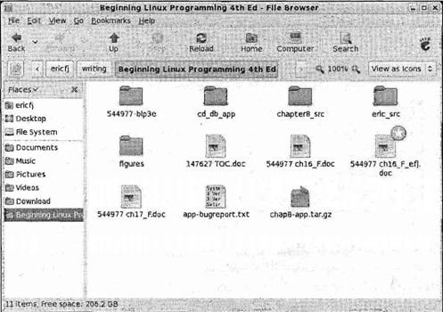Рис. 16.1 Установка библиотек разработки GNOME/GTK+Полный рабочий стол GNOME со своими стандартными приложениями и библиотеками разработки GNOME/GTK+ включает в себя более 60 пакетов, поэтому установка GNOME с нуля вручную или из исходного кода — устрашающая перспектива. К счастью, в современных дистрибутивах Linux есть отличные утилиты управления пакетами, превращающие установку GNOME/GTK+ и библиотек разработки в пустяковое дело. В дистрибутивах Linux Red Hat и Fedora вы открываете средство Package Management (Управление пакетами), щелкнув мышью кнопку меню Applications (Приложения) и выбрав команду Add/Remove Software (Добавить/удалить программы). Когда появится Package Management (рис. 16.2), убедитесь в том, что установлен флажок GNOME Software Development (Разработка программ GNOME). Загляните в область Development (Разработка) для этого установочного параметра. В этой главе вы будете работать с GNOME/GTK+ 2, поэтому убедитесь в том, что установлены библиотеки версии 2.x.Рис. 16.2 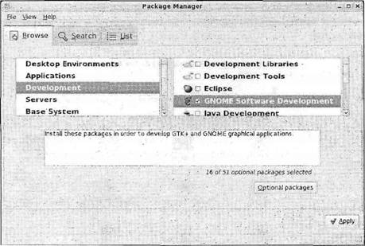В случае дистрибутивов, применяющих RPM-пакеты, у вас должны быть установлены как минимум следующие RPM-пакеты: □ gtk2-2.10.11-7.fc7.rpm; □ gtk2-devel-2.10.11-7.fc7.rpm; □ gtk2-engines-2.10.0-3.fc7.rpm; □ libgnome-2.18.0-4.fc7.rpm; □ libgnomeui-2.18.l-2.fc7.rpm; □ libgnome-devel-2.18.0-4.fc7.rpm; □ libgnomeui-devel-2.18.1-2.fc7.rpm. Примечание В дистрибутиве Debian и основанных на Debian системах, таких как Ubuntu, вы можете использовать программу apt-get для установки пакетов GNOME/GTK+ с разных сайтов-зеркал (mirrors). Для выяснения подробностей следуйте по ссылкам Web-сайта http://www.gnome.org. Опробуйте также демонстрационное приложение GTK+, в котором показаны все виджеты и их оформление (рис. 16.3). $ gtk-demo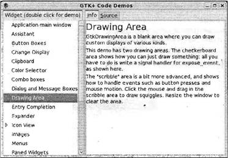 Рис. 16.3 Примечание Для каждого виджета отображаются вкладки Info (Информация) и Source (Исходный код). На вкладке Source (Исходный код) приведен программный код на языке С для применения данного виджета. На ней может быть представлено множество примеров. Выполните упражнение 16.1. Упражнение 16.1. Обычное окно GtkWindow Давайте начнем программирование средствами GTK+ с простейшей из программ GUI — отображения окна. Вы увидите библиотеки GTK+ в действии и большой набор функциональных возможностей, получаемых из очень короткого программного кода. 1. Введите программу и назовите ее gtk1.с: #include <gtk/gtk.h> int main(int argc, char *argv[]) { GtkWidget *window; gtk_init(&argc, &argv); window = gtk_window_new(GTK_WINDOW_TOPLEVEL); gtk_widget_show(window); gtk_main(); return 0; } 2. Для компиляции gtk1.c введите следующую команду: $ gcc gtk1.c -о gtk1 `pkg-config --cflags --libs gtk+-2.0` Примечание Когда вы выполните программу с помощью следующей команды, ваше окно должно раскрыться (рис. 16.4). $ ./gtk1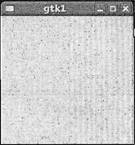 Рис. 16.4 Учтите, что вы можете перемещать окно, изменять его размер, сворачивать и раскрывать его на весь экран. Как это работает Включить заголовочные файлы, необходимые для библиотек GTK+ и связанных с ними библиотек, можно с помощью одного оператора #include <gtk/gtk.h>. Далее вы объявляете окно как указатель на объект GtkWidget. Затем для инициализации библиотек GTK+ следует выполнить вызов gtk_init, передав аргументы командной строки argcи argv. Это дает возможность GTK+ выполнить синтаксический анализ любых параметров командной строки, о которых комплект должен знать. Учтите, что вы всегда должны инициализировать GTK+ таким способом перед вызовом любых функций GTK+. Суть примера заключается в вызове функции gtk_window_new. Далее приведен ее прототип: GtkWidget* gtk_window_new(GtkWindowType type); Параметр type может принимать в зависимости от назначения окна одно из двух значений: □ GTK_WINDOW_TOPLEVEL— стандартное окно с рамкой; □ GTK_WINDOW_POPUP— окно без рамки, подходящее для диалогового окна. Почти всегда вы будете применять значение GTK_WINDOW_TOPLEVEL, потому что для создания диалоговых окон, как вы узнаете позже, есть гораздо более удобные способы. Вызов gtk_window_newсоздает окно в памяти, таким образом у вас появляется возможность перед реальным выводом окна на экран заполнить его виджетами, изменить размер окна, его заголовок и т.д. Для того чтобы окно появилось на экране, выполните вызов функции gtk_widget_show: gtk_widget_show(window); Эта функция принимает указатель типа GtkWidget, поэтому вы просто предоставляете ссылку на свое окно. Последним вы выполняете вызов функции gtk_main. Эта основная функция запускает процесс обмена информацией (interactivity process), передавая управление GTK+, и не возвращает его до тех пор, пока не будет выполнен вызов функции gtk_main_quit. Как видно в программе gtk1.с, этого никогда не происходит, поэтому приложение не завершается даже после закрытия окна. Проверьте это, щелкнув кнопкой мыши пиктограмму закрытия окна и убедившись в отсутствии строки, приглашающей вводить команду. Вы исправите это поведение после того, как познакомитесь с сигналами и обратными вызовами в следующем разделе. Сейчас завершите приложение, нажав комбинацию клавиш <Ctrl>+<C> в окне командной оболочки, которое вы использовали для запуска программы gtk1. События, сигналы и обратные вызовыУ всех библиотек GUI есть нечто общее. Должен существовать некий механизм для выполнения программного кода в ответ на действие пользователя. Программа, выполняющаяся в режиме командной строки, может позволить себе останов выполнения в ожидании ввода и затем применить нечто вроде оператора выбора для выполнения разных ветвей программы в зависимости от введенных данных. Такой подход нецелесообразен в случае приложения GUI, поскольку оно должно непрерывно реагировать на ввод пользователя, например, ему приходится постоянно обновлять области окна. У современных оконных систем есть система событий и приемники событий, которым адресована эта задача. Идея заключается в том, что каждый пользовательский ввод обычно с помощью мыши или клавиатуры инициирует событие. Нажатие на клавиатуре, например, вызовет "событие клавиатуры". Затем пишется программный код, который ждет приема такого события и выполняется в случае его возникновения. Как вы уже видели, эти события генерирует система X Window System, но они мало помогут вам как программисту GTK+, т.к. они очень низкоуровневые. Когда производится щелчок кнопкой мыши, X порождает событие, содержащее координаты указателя мыши, а вам нужно знать, когда пользователь активизирует виджет. У GTK+ есть собственная система событий и приемников событий, называемых сигналами и обратными вызовами. Их очень легко применять, поскольку для установки обработчика сигнала можно использовать очень полезное свойство языка С, указатель на функцию. Сначала несколько определений. Сигнал GTK+ порождается объектом типа GtkObject, когда происходит нечто, например, ввод пользователя. Функция, связанная с сигналом и, следовательно, вызываемая при любом порождении сигнала, называется функцией обратного вызова. Примечание Как программист, использующий GTK+, вы должны заботиться только о написании и связывании функций обратного вызова, поскольку код порождения сигнала — это внутренний программный код определенного виджета. Прототип или заголовок функции обратного вызова обычно похож на следующий:
Вы передаете два параметра: первый — указатель на виджет, породивший сигнал, второй — произвольный указатель, который вы выбираете самостоятельно, когда связываете обратный вызов. Вы можете использовать этот указатель для любых целей. Связать функцию обратного вызова тоже очень просто. Вы вызываете функцию g_signal_connectи передаете ей виджет, имя сигнала в виде строки, указатель на функцию обратного вызова и ваш произвольный указатель: gulong g_signal_connect(gpointer *object, const gchar *name, GCallback func, gpointer user_data); Следует отметить, что для связывания функций обратного вызова нет ограничений. Вы можете иметь много сигналов, связанных с одной и той же функцией обратного вызова, и много функций обратного вызова, связанных с единственным сигналом. В документации по API GTK+ можно найти подробное описание сигналов, порождаемых каждым виджетом. Примечание Вы опробуете функцию g_signal_connectв упражнении 16.2. Упражнение 16.2. Функция обратного вызова В программе gtk2.c вставьте в свое окно кнопку и свяжите сигнал clicked(щелчок мышью по кнопке) с вашей функцией обратного вызова для вывода короткого сообщения: #include <gtk/gtk.h> #include <stdio.h> static int count = 0; void button_clicked(GtkWidget *button, gpointer data) { printf("%s pressed %d time(s) \n", (char *)data, ++count); } int main(int argc, char* argv[]) { GtkWidget *window; GtkWidget *button; gtk_init(&argc, &argv); window = gtk_window_new(GTK_WINDOW_TOPLEVEL); button = gtk_button_new_with_label("Hello World!"); gtk_container_add(GTK_CONTAINER(window), button); g_signal_connect(GTK_OBJECT(button), "clicked", GTK_SIGNAL_FUNC(button_clicked), "Button 1"); gtk_widget_show(button); gtk_widget_show(window); gtk_main(); return 0; } Введите исходный текст программы и сохраните его в файле с именем gtk2.c. Откомпилируйте и скомпонуйте программу аналогично программе gtk1.с из предыдущего упражнения. Запустив ее, вы получите окно с кнопкой. При каждом щелчке кнопки мышью будет выводиться короткое сообщение (рис. 16.5). 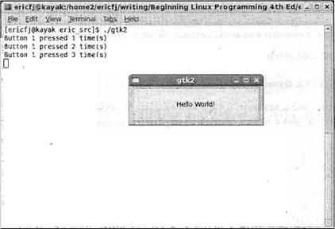Рис. 16.5 Как это работает Вы добавили два новых элемента в программу gtk2.c: виджет GtkButtonи функцию обратного вызова. GtkButton— это виджет простой кнопки, которая может содержать текст, в нашем случае "Hello World", и порождает сигнал, названный clicked, каждый раз, когда кнопку щелкают мышью. Функция обратного вызова button_clickedсвязана с сигналом clickedвиджета кнопки с помощью функции g_signal_connect: g_signal_connect(GTK_OBJECT(app), "clicked", GTK_SIGNAL_FUNC(button_clicked), "Button 1"); Обратите внимание на то, что имя кнопки — "Button 1" — передается в функцию обратного вызова как данные пользователя. Весь остальной добавленный программный код касается виджета кнопки, создаваемой так же, как окно — вызовом функции gtk_button_new_with_label— функция gtk_widget_showделает ее видимой. Для расположения кнопки в окне вызывается функция gtk_container_add. Эта простая функция помещает GtkWidgetвнутрь объекта GtkContainerи принимает контейнер и виджет как аргументы: void gtk_container_add(GtkContainer* container, GtkWidget *widget); Как вы уже знаете, GtkWindow— потомок или дочерний объект объекта GtkContainer. поэтому вы можете привести тип вашего объекта-окна к типу GtkContainerс помощью макроса GTK_CONTAINER: gtk_container_add(GTK_CONTAINER(window), button); Функция gtk_container_addпрекрасно подходит для расположения в окне одиночного виджета, но гораздо чаще вам потребуется для создания хорошего интерфейса размещать несколько виджетов в разных частях окна. У комплекта GTK+ есть специальные виджеты как раз для этой цели, именуемые виджетами упаковочных контейнеров, Виджеты упаковочных контейнеровКомпоновка GUI исключительно важна для удобства применения интерфейса, и добиться наилучшей компоновки труднее всего. Реальная трудность в размещении виджетов заключается в том, что вы не можете полагаться на наличие у всех пользователей одинаковых размеров окон, тем, шрифтов и цветовых схем. То, что может быть отличным интерфейсом для одной системы, в другой системе может оказаться просто нечитаемым. Для создания GUI, который выглядит одинаково во всех системах, вам необходимо избегать размещения виджетов на основе абсолютных координат и использовать более гибкую систему компоновки. У GTK+ есть для этой цели виджеты контейнеров. Виджеты-контейнеры позволяют управлять компоновкой виджетов в окнах вашего приложения. Виджеты упаковочных контейнеров (box) представляют очень удобный тип виджета-контейнера. GTK+ предлагает множество виджетов-контейнеров других типов, описанных в интерактивной документации к GTK+. Виджеты упаковочных контейнеров — невидимые виджеты, задача которых — хранить другие виджеты и управлять их компоновкой или схемой размещения. Для управления размером отдельных виджетов, содержащихся в виджете упаковочного контейнера, вы задаете правила вместо координат. Поскольку виджеты упаковочных контейнеров могут содержать любые объекты GtkWidgetи объект GtkBoxсам является объектом типа GtkWidget, для создания сложных компоновок можно формировать виджеты упаковочных контейнеров, вложенные один в другой. У типа GtkBoxсуществуют два основных подкласса: □ GtkHBox— однострочный горизонтальный упаковочный контейнер; □ GtkVBox— одностолбцовый вертикальный упаковочный контейнер. После создания упаковочных контейнеров следует задать два параметра: homogeneousи spacing: GtkWidget* gtk_hbox_new(gboolean homogeneous, gint spacing); GtkWidget* gtk_vbox_new(gboolean homogeneous, gint spacing); Эти параметры управляют компоновкой всех виджетов в конкретном упаковочном контейнере. Параметр homogeneous— логический, если он равен TRUE, виджеты занимают одинаковую площадь независимо от их индивидуальных размеров. Параметр spacingзадает расстояние между виджетами в пикселах. После того как упаковочный контейнер создан, добавьте в него виджеты с помощью функций gtk_box_pack_startи gtk_box_pack_end: void gtk_box_pack_start(GtkBox *box, GtkWidget *child, gboolean expand, gboolean f ill, guint padding); void gtk_box_pack_end(GtkBox *box, GtkWidget *child, gboolean expand, gboolean fill, guint padding); Функция gtk_box_pack_startвставляет виджеты, начиная от левого края контейнера GtkHBoxи нижнего края контейнера GtkVBox; функция gtk_box_pack_end, наоборот, начинает от правого и верхнего краев контейнера. Параметры функций управляют расстоянием между виджетами и форматом каждого виджета, находящегося в упаковочном контейнере. В табл. 16.1 описаны параметры, которые вы можете передавать в функцию gtk_box_pack_startили gtk_box_pack_end. Таблица 16.1
Давайте теперь рассмотрим эти виджеты упаковочных контейнеров и создадим более сложный пользовательский интерфейс, демонстрирующий вложенные упаковочные контейнеры (упражнение 16.3). Упражнение 16.3. Макет виджета-контейнераВ этом примере вы спланируете размещение нескольких простых виджетов-меток типа GtkLabelс помощью контейнеров типа GtkHBoxи GtkVBox. Виджеты-метки — простые графические элементы, подходящие для вывода коротких текстовых фрагментов. Назовите эту программу container.c: #include <gtk/gtk.h> void closeApp(GtkWidget *window, gpointer data) { gtk_main_quit(); } /* Обратный вызов позволяет приложению отменить событие close/destroy. (Для отмены возвращает TRUE.) */ gboolean delete_event(GtkWidget *widget, GdkEvent *event, gpointer data) { printf("In delete_event\n"); return FALSE; } int main (int argc, char *argv[]) { GtkWidget *window; GtkWidget *label1, *label2, *label3; GtkWidget *hbox; GtkWidget *vbox; gtk_init(&argc, &argv); window = gtk_window_new(GTK_WINDOW_TOPLEVEL); gtk_window_set_title(GTK_WINDOW window), "The Window Title"); gtk_window_set_position(GTK_WINDOW(window), GTK_WIN_POS_CENTER); gtk_window_set_default_size(GTK_WTNDOW(window), 300, 200); g_signal_connect(GTK_OBJECT(window), "destroy", GTK_SIGNAL_FUNC(closeApp), NULL); g_signal_connect(GTK_OBJECT(window), "delete_event", GTK_SIGNAL_FUNC(delete_event), NULL); label1 = gtk_label_new("Label 1"); label2 = gtk_label_new("Label 2"); label3 = gtk_label_new("Label 3"); hbox = gtk_hbox_new(TRUE, 5); vbox = gtk_vbox_new(FALSE, 10); gtk_box_pack_start(GTK_BOX(vbox), label1, TRUE, FALSE, 5); gtk_box_pack_start(GTK_BOX(vbox), label2, TRUE, FALSE, 5); gtk_box_pack_start(GTK_BOX(hbox), vbox, FALSE, FALSE, 5); gtk_box_pack_start(GTK_BOX(hbox), label3, FALSE, FALSE, 5); gtk_container_add(GTK_CONTAINER(window), hbox); gtk_widget_show_all(window); gtk_main(); return 0; } Когда вы выполните эту программу, то увидите следующую схему расположения виджетов-меток в вашем окне (рис. 16.6). 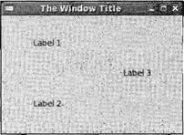Рис. 16.6 Как это работает Вы создаете два виджета упаковочных контейнеров: hboxи vbox. С помощью функции gtk_box_pack_startвы заполняете vboxвиджетами label1и label2, причем label2располагается у нижнего края контейнера, потому что вставляется после label1. Далее контейнер vboxцеликом наряду с меткой label3вставляется в контейнер hbox. В заключение hboxдобавляется в окно и выводится на экран с помощью функции gtk_widget_show_all. Схему размещения упаковочного контейнера легче понять с помощью блок-схемы, показанной на рис. 16.7. 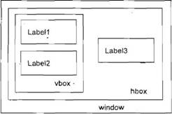Рис. 16.7 Познакомившись с виджетами, сигналами, обратными вызовами и виджетами-контейнерами, вы рассмотрели основы комплекта инструментов GTK+. Но для того чтобы стать программистом, профессионально применяющим GTK+, нужно понять, как наилучшим образом использовать имеющиеся в комплекте виджеты. Виджеты GTK+В этом разделе мы рассмотрим API самых популярных виджетов GTK+, которые вы будете применять чаще всего в своих приложениях. GtkWindowGtkWindow— базовый элемент всех приложений GTK+. До сих пор вы использовали его для хранения своих виджетов. GtkWidget +---- GtkContainer +---- GtkBin +---- GtkWindow Существуют десятки вызовов API GtkWindow, но далее приведены функции, заслуживающие особого внимания. GtkWidget* gtk_window_new(GtkWindowType type); void gtk_window_set_title(GtkWindow *window, const gchar *title); void gtk_window_set_position(GtkWindow *window, GtkWindowPosition position); void gtk_window_set_default_size(GtkWindow *window, gint width, gint height); void gtk_window_resize(GtkWindow *window, gint width, gint height); void gtk_window_set_resizable(GtkWindow *window, gboolean resizable); void gtk_window_present(GtkWindow *window); void gtk_window_maximize(GtkWindow *window); void gtk_window_unmaximize(GtkWindow *window); Как вы видели, функция gtk_window_newсоздает в памяти новое пустое окно. Заголовок окна не задан и размер и местоположение окна не определены. Обычно вы будете заполнять окно виджетами и задавать меню и панель инструментов перед выводом окна на экран с помощью вызова функции gtk_widget_show. Функция gtk_window_set_titleизменяет текст полосы заголовка, информируя оконный менеджер запроса. Примечание Функция gtk_window_setpositionуправляет начальным местоположением на экране. Параметр positionможет принимать пять значений, перечисленных в табл. 16.2. Таблица 16.2
Функция gtk_window_set_default_sizeзадает окно на экране в единицах отображения GTK+. Явное задание размера окна гарантирует, что содержимое окна не будет закрыто чем-либо или скрыто. Для того чтобы изменить размеры окна после его вывода на экран, можно воспользоваться функцией gtk_window_resize. По умолчанию пользователь может изменить размеры окна, перемещая обычным способом его границу мышью. Если вы хотите помешать этому, можно вызвать функцию gtk_window_set_resizeable, приравненную FALSE. Для того чтобы убедиться в том, что ваше окно присутствует на экране и видно пользователю, т.е. не свернуто или скрыто, подойдет функция gtk_window_present. Она полезна для диалоговых окон, т.к. позволяет убедиться в том, что окна не свернуты, когда вам нужен какой-либо пользовательский ввод. В противном случае, для раскрытия окна на весь экран и его сворачивания у вас есть функции gtk_window_maximizeи gtk_window_minimize. GtkEntryGtkEntry— виджет однострочного текстового поля, который обычно применяется для ввода простых текстовых данных, например, адреса электронной почты, имени пользователя или имени узла сети. Существуют вызовы API, позволяющие задать как считывание введенного текста, так и его максимальную длину в символах, а также другие параметры, управляющие местоположением текста и его выделением. GtkWidget +----GtkEntry Можно настроить GtkEntryна отображение звездочек (или любого другого определенного пользователем символа) на месте набранных буквенно-цифровых символов, что очень удобно для ввода паролей, когда вы не хотите, чтобы кто-то заглядывал через ваше плечо и читал текст. Мы опишем большинство самых полезных функций виджета GtkEntry: GtkWidget* gtk_entry_new(void); GtkWidget* gtk_entry_new_with_max_length(gint max); void gtk_entry_set_max_length(GtkEntry *entry, gint max); G_CONST_RETURN gchar* gtk_entry_get_text(GtkEntry *entry); void gtk_entry_set_text(GtkEntry *entry, const gchar *text); void gtk_entry_append_text(GtkEntry *entry, const gchar *text); void gtk_entry_prepend_text(GtkEntry* entry, const gchar *text); void gtk_entry_set_visibility(GtkEntry *entry, gboolean visible); void gtk_entry_set_invisible_char(GtkEntry *entry, gchar invch); void gtk_entry_set_editable(GtkEntry *entry, gboolean editable); Вы можете создать GtkEntryс помощью функции gtk_entry_newили при вводе текста фиксированной длины с помощью функции gtk_entry_new_with_max_length. Ограничение ввода определенной длиной текста избавляет вас от проверки корректности длины ввода и, возможно, необходимости информировать пользователя о том, что текст слишком длинный. Для получения содержимого виджета GtkEntryвызывайте функцию gtk_entry_get_text, которая возвращает указатель const char, внутренний по отношению к GtkEntry( G_CONST_RETURN— макрос, определенный в библиотеке GLib). Если вы хотите изменить текст или передать его в функцию, которая может его модифицировать, следует скопировать строку с помощью, например, функции strcpy. Вы можете вручную задавать и изменять содержимое виджета GtkEntry, применяя функции _set_text, _append_textи _modify_text. Учтите, что они принимают указатели const. Для применения GtkEntryв качестве поля ввода пароля, которое отображает звездочки на месте символов, воспользуйтесь функцией gtk_entry_set_visibility, передав ей параметр visibleсо значением FALSE. Скрывающий символ можно изменить в соответствии с вашими требованиями с помощью функции gtk_entry_set_invisible_char. Выполните упражнение 16.4. Упражнение 16.4. Ввод имени пользователя или пароляТеперь, познакомившись с функциями виджета GtkEntry, посмотрим на них в действии в небольшой программе. Программа entry.c будет создавать окно ввода имени пользователя и пароля и сравнивать введенный пароль с секретным. 1. Сначала определим секретный пароль, остроумно заданный как secret: #include <gtk/gtk.h> #include <stdio.h> #include <string.h> const char * password = "secret"; 2. У вас есть две функции обратного вызова, которые вызываются, когда уничтожается окно и щелкается мышью кнопка OK: void closeApp(GtkWidget *window, gpointer data) { gtk_main_quit(); } void button_clicked(GtkWidget *button, gpointer data) { const char *password_text = gtk_entry_get_text(GTK_ENTRY((GtkWidget *) data)); if (strcmp(password_text, password) == 0) printf("Access granted!\n"); else printf("Access denied!\n"); } 3. В функции mainсоздается, компонуется интерфейс и связываются обратные вызовы с сигналами. Для компоновки виджетов меток и полей ввода примените виджеты-контейнеры hbox и vbox: int main (int argc, char *argv[]) { GtkWidget *window; GtkWidget *username_label, *password_label; GtkWidget *username_entry, *password_entry; GtkWidget *ok_button; GtkWidget *hbox1, *hbox2; GtkWidget *vbox; gtk_init(&argc, &argv); window = gtk_window_new(GTK_WINDOW_TOPLEVEL); gtk_window_set_title(GTK_WINDOW(window), "GtkEntryBox"); gtk_window_set_position(GTK_WINDOW(window), GTK_WIN_POS_CENTER); gtk_windowset_default_size(GTK_WINDOW(window), 200, 200); g_signal_connect(GTK_OBJECT(window), "destroy", GTK_SIGNAL_FUNC(closeApp), NULL); username_label = gtk_label_new("Login:"); password_label = gtk_label_new("Password:"); username_entry = gtk_entry_new(); password_entry = gtk_entry_new(); gtk_entry_set_visibility(GTK_ENTRY(password_entry), FALSE); ok_button = gtk_button_new_with_label("Ok"); g_signal_connect(GTK_OBJECT(ok_button), "clicked", GTK_SIGNAL_FUNC(button_clicked), password_entry); hbox1 = gtk_hbox_new(TRUE, 5); hbox2 = gtk_hbox_new(TRUE, 5); vbox = gtk_vbox_new(FALSE, 10); gtk_box_pack_start(GTK_BOX(hbox1), username_label, TRUE, FALSE, 5); gtk_box_pack_start(GTK_BOX(hbox1), username_entry, TRUE, FALSE, 5); gtk_box_pack_start(GTK_BOX(hbox2), password_label, TRUE, FALSE, 5); gtk_box_pack_start(GTK_BOX(hbox2), password_entry, TRUE, FALSE, 5); gtk_box_pack_start(GTK_BOX(vbox), hbox1, FALSE, FALSE, 5); gtk_box_pack_start(GTK_BOX(vbox), hbox2, FALSE, FALSE, 5); gtk_box_pack_start(GTK_BOX(vbox), ck_button, FALSE, FALSE, 5); gtk_container_add(GTK_CONTAINER(window), vbox); gtk_widget_show_all(window); gtk_main(); return 0; } Когда вы запустите программу, то получите окно, показанное на рис. 16.8. 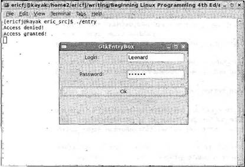Рис. 16.8 Как это работает Программа создает два виджета типа GtkEntry, username_entryи password_entry, а также задает видимость password_entry, равной FALSE, чтобы скрыть введенный пароль. Затем она формирует кнопку GtkButton, с помощью которой вы связываете сигнал clickedс функцией обратного вызова button_clicked. Как только в функции обратного вызова программа извлечет введенный пароль и сравнит его с секретным паролем, на экран выводится соответствующее сообщение. Обратите внимание на то, что для вставки виджетов в свои контейнеры вы много раз повторили операторы gtk_box_pack_start. Для сокращения этого повторяющегося программного кода в последующих примерах будет определена вспомогательная функция. GtkSpinButtonПорой вам нужно, чтобы пользователь ввел числовое значение, например, максимальную скорость или размер инструмента, и в такой ситуации виджет GtkSpinButton(кнопка-счетчик) идеален. Он ограничивает ввод пользователя только цифровыми символами и можно задать диапазон допустимых значений от нижней до верхней границы. Виджет также содержит стрелки, направленные вверх и вниз, так что пользователь может "накручивать" значение, для удобства пользуясь только мышью. GtkWidget +---- GtkEntry +---- GtkSpinButton И снова API понятен, и мы перечислим наиболее часто применяемые вызовы: GtkWidget* gtk_spin_button_new(GtkAdjustment *adjustment, gdouble climb_rate, guint digits); GtkWidget* gtk_spin_button_new_with_range(gdouble min, gdouble max, gdouble step); void gtk_spin_button_set_digits(GtkSpinButton *spin_button, guint digits); void gtk_spin_button_set_increments(GtkSpinButton *spin_button, gdouble step, gdouble page); void gtk_spin_button_set_range(GtkSpinButton *spin_button, gdouble min, gdouble max); gdouble gtk_spin_button_get_value(GtkSpinButton *spin_button); gint gtk_spin_button_get_value_as_int(GtkSpinButton *spin_button); void gtk_spin_button_set_value(GtkSpinButton *spin button, gdouble value); Для создания виджета GtkSpinButtonс помощью функции gtk_spin_button_newвы сначала должны создать объект GtkAdjustment. Виджет GtkAdjustment— это абстрактный объект, содержащий логику, касающуюся управления значениями с ограничениями. Он также применяется и в других виджетах, таких как GtkHScaleи GtkVScale. Для создания объекта типа GtkAdjustmentпередайте в функцию нижнюю и верхнюю границы и размер приращения. GtkObject* gtk_adjustment_new(gdouble value, gdouble lower, gdouble upper, gdouble step_increment, gdouble page_increment, gdouble page_size); Значения параметров step_incrementи page_incrementзадают величину минимального и максимального приращений, В случае кнопки-счетчика GtkSpinButtonпараметр step_incrementопределяет, насколько изменится значение при щелчке мышью стрелки виджета. Параметры page_incrementи page_sizeв виджетах GtkSpinButtonне важны. Второй параметр, climb_rate, функции gtk_spin_button_newуправляет скоростью прокрутки значений при нажатии и удерживании кнопки со стрелкой. И наконец, параметр digitsзадает точность представления числового значения, виджета, если, например, digitsравен 3, кнопка-счетчик отобразит 0.00. Функция gtk_spin_button_new_with_range— удобный способ создания объекта GtkAdjustment. Просто задайте нижнюю и верхнюю границы и величину приращения. Прочесть текущее значение очень легко благодаря функции gtk_spin_button_getvalue, а если вам нужно целое число, можно применить функцию gtk_spin_button_get_value_as_int. Выполните упражнение 16.5. Упражнение 16.5. Использование виджетаGtkSpinButton Сейчас мы посмотрим в коротком примере, как действует кнопка-счетчик GtkSpinButton. Назовите файл spin.с. #include <gtk/gtk.h> void closeApp(GtkWidget *window, gpointer data) { gtk_main_quit(); } int main(int argc, char *argv[]) { GtkWidget* window; GtkWidget *spinbutton; GtkObject *adjustment; gtk_init(&argc, &argv); window = gtk_window_new(GTK_WINDOW_TOPLEVEL); gtk_window_set_default_size(GTK_WINDOW(window), 300, 200); g_signal_connect(GTK_OBJECT(window), "destroy", GTK_SIGNAL_FUNC(closeApp), NULL); adjustment = gtk_adjustment_new(100.0, 50.0, 150.0, 0.5, 0.05, 0.05); spinbutton = gtk_spin_button_new(GTK_ADJUSTMENT(adjustment), 0.01, 2); gtk_container_add(GTK_CONTAINER(window), spinbutton); gtk_widget_show_all(window); gtk_main(); return 0; } Когда вы выполните программу, то получите кнопку-счетчик, ограниченную диапазоном значений 50–150 (рис. 16.9). 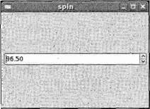Рис. 16.9 GtkButtonВы уже видели виджет кнопки GtkButtonв действии, но существует несколько виджетов, потомков GtkButton, с чуть большими функциональными возможностями, заслуживающими упоминания. GtkButton +----GtkToggleButton +----GtkCheckButton +----GtkRadioButton Как видно из иерархии виджетов, кнопка-переключатель типа GtkToggleButton— прямой потомок кнопки GtkButton, кнопка-флажок GtkCheckButton— кнопки-выключателя GtkToggleButtonи то же самое для переключателя GtkRadioButton, причем каждый дочерний виджет предназначен для определенных задач. GtkToggleButton Виджет GtkToggleButtonидентичен виджету GtkButtonза исключением одной важной детали: GtkToggleButtonобладает состоянием. Это означает, что кнопка-выключатель может быть включена или выключена. Когда пользователь щелкает мышью виджет GtkToggleButton, последний стандартным способом порождает сигнал clickedи изменяет (или "переключает") свое состояние. API у виджета GtkToggleButtonочень простой: GtkWidget* gtk_toggle_button_new(void); GtkWidget* gtk_toggle_button_new_with_label(const gchar* label); gboolean gtk_toggle_button_get_active(GtkToggleButton *toggle_button); void gtk_toggle_button_set_active(GtkToggleButton *toggle_button, gboolean is_active); Наиболее интересные функции — gtk_toggle_button_get_activeи gtk_toggle_button_set_active, которые вы вызываете для чтения и установки состояния кнопки-выключателя. Если характеристика функционирования равна TRUE, это означает, что кнопка-выключатель GtkToggleButtonвключена. GtkCheckButton Кнопка-флажок GtkCheckButton— это замаскированная кнопка-выключатель GtkToggleButton. Вместо скучного прямоугольного отображения GtkToggleButtonкнопка GtkCheckButtonвыводится как привлекательный флажок с расположенным рядом текстом. Функциональных различий между ними нет. GtkWidget* gtk_check_button_new(void); GtkWidget* gtk_check_button_new_with_label(const gchar *label);GtkRadioButton Эта кнопка немного отличается от предыдущих, т.к. может группироваться с другими кнопками того же типа. Переключатель (или радиокнопка) GtkRadioButton— одна из тех кнопок, которые позволяют выбирать только один вариант из группы предложенных. Имя заимствовано у старых радиоприемников с механическими кнопками, которые выскакивали с треском, возвращаясь в прежнее состояние, при нажатии другой кнопки. GtkWidget* gtk_radio_button_new(GSList *group); GtkWidget* gtk_radio_button_new_from_widget(GtkRadioButton *group); GtkWidget* gtk_radio_button_new_with_label(GSList *group, const gchar *label); void gtk_radio_button_set_group(GtkRadioButton *radio_button, GSList *group); GSList* gtk_radio_button_get_group(GtkRadioButton *radio_button); Группа переключателей представлена в объекте-списке библиотеки GLib, названном GSList. Для того чтобы объединить переключатели в группу, вы можете создать объект GSListи затем передать ему каждую кнопку с помощью функций gtk_radio_button_newи gtk_radio_button_get_group, есть и более легкий способ в виде функции gtk_radio_button_new_with_widget, которая включает в GSList существующую кнопку. Вы увидите ее в действии в упражнении 16.6, которое позволит вам опробовать разные кнопки GtkButton. Упражнение 16.6. GtkCheckButton, GtkToggleButtonи GtkRadioButton Введите следующий текст в файл с именем buttons.с. 1. Сначала объявите указатели на кнопки как глобальные переменные: #include <gtk/gtk.h> #include <stdio.h> GtkWidget *togglebutton; GtkWidget *checkbutton; GtkWidget *radiobutton1, *radiobutton2; void closeApp(GtkWidget *window, gpointer data) { gtk_main_quit(); } 2. Далее определите вспомогательную функцию, которая упаковывает GtkWidgetи GtkLabelв контейнер GtkHboxи затем вставляет этот GtkHboxв заданный виджет- контейнер. Это поможет вам сократить повторяющийся программный код: void add_widget_with_label(GtkContainer * box, gchar * caption, GtkWidget * widget) { GtkWidget *label = gtk_label_new(caption); GtkWidget *hbox = gtk_hbox_new(TRUE, 4); gtk_container_add(GTK_CONTAINER(hbox), label); gtk_container_add(GTK_CONTAINER(hbox), widget); gtk_container_add(box, hbox); } 3. print_active— еще одна вспомогательная функция, которая выводит текущее состояние заданной кнопки-выключателя GtkToggleButtonсо строкой описания. Он вызывается из функции button_clicked, функции обратного вызова, связанной с сигналом clickedкнопки OK. При каждом щелчке мышью этой кнопки вы получаете на экране отчет о состоянии кнопок: void print_active(char * button_name, GtkToggleButton* button) { gboolean active = gtk_toggle_button_get_active(button); printf("%s is %s\n", button_name, active?"active":"not active"); } void button_clicked(GtkWidget *button, gpointer data) { print_active("Checkbutton", GTK_TOGGLE_BUTTON(checkbutton)); print_active("Togglebutton", GTK_TOGGLE_BUTTON(togglebutton)); print_active("Radiobutton1", GTK_TOGGLE_BUTTON(radiobutton1)); print_active("Radiobutton2", GTK_TOGGLE_BUTTON(radiobutton2)); printf("\n"); } 4. В функции mainвы создаете виджеты кнопок, поочередно помещаете их в контейнер GtkVBox, добавив пояснительные метки, и связываете сигнал обратного вызова с кнопкой OK: gint main(gint argc, gchar *argv[]) { GtkWidget* window; GtkWidget *button; GtkWidget *vbox; gtk_init(&argc, &argv); window = gtk_window_new(GTK_WINDOW_TOPLEVEL); gtk_window_set_default_size(GTK_WINDOW(window), 200, 200); g_signal_connect(GTK_OBJECT(window), "destroy", GTK_SIGNAL_FUNC(closeApp), NULL); button = gtk_button_new_with_label("Ok"); togglebutton = gtk_toggle_button_new_with_label("Toggle"); checkbutton = gtk_check_button_new(); radiobutton1 = gtk_radio_button_new(NULL); radiobutton2 = gtk_radio_button_new_from_widget(GTK_RADIO_BUTTON(radiobutton1)); vbox = gtk_vbox_new(TRUE, 4); add_widget_with_label(GTK_CONTAINER(vbox), "ToggleButton:", togglebutton); add_widget_with_label(GTK_CONTAINER(vbox), "CheckButton:", checkbutton); add_widget_with_label(GTK_CONTAINER(vbox), "Radio 1:", radiobutton1); add_widget_with_label(GTK_CONTAINER(vbox), "Radio 2:", radiobutton2); add_widget_with_label(GTK_CONTAINER(vbox), "Button:", button); g_signal_connect(GTK_OBJECT(button), "clicked", GTK_SIGNAL_FUNC(button_clicked), NULL); gtk_container_add(GTK_CONTAINER(window), vbox); gtk_widget_show_all(window); gtk_main(); return 0; } На рис. 16.10 показана программа buttons.c в действии с виджетами GtkButtonчетырех часто применяемых типов. 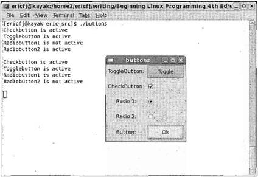 Рис. 16.10 Щелкните мышью кнопку OK, чтобы увидеть состояние разных кнопок. Данная программа — простой пример использования кнопок GtkButtonчетырех типов — показывает, как можно считать состояние кнопки типа GtkToggleButton, GtkCheckButtonи GtkRadioButtonс помощью единственной функции gtk_toggle_button_get_active. Это одно из огромных преимуществ объектно-ориентированного подхода — поскольку вам не нужны отдельные функции get_activeдля каждого типа кнопки, вы можете сократить требующийся программный код. GtkTreeViewК этому моменту мы рассмотрели несколько простых виджетов GTK+, но не все виджеты представляют собой однострочные инструменты для ввода или отображения. Сложность виджетов ничем не ограничивается, и GtkTreeView— яркий пример виджета, инкапсулирующего огромный объем функциональных возможностей. GtkWidget +---- GtkContainer +---- GtkTreeView GtkTreeView— член семейства виджетов, новых для комплекта GTK+ 2, создающий представление данных в виде дерева или списка наподобие тех, которые вы можете встретить в электронной таблице или файловом менеджере. С помощью виджета GtkTreeViewможно создать сложные представления данных, смешивая текст, растровую графику и даже данные, вводимые с помощью виджетов GtkEntry, и т.д. Самый быстрый способ испытания GtkTreeView— запуск приложения gtk-demo, которое поставляется вместе с GTK+. Демонстрационное приложение показывает возможности всех виджетов GTK+, включая GtkTreeView(рис. 16.11). 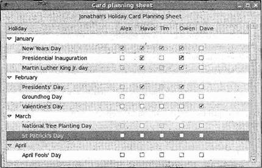 Рис. 16.11 Семейство GtkTreeViewсоставляется из четырех компонентов: □ GtkTreeView— отображение дерева или списка; □ GtkTreeViewColumn— представление столбца списка или дерева; □ GtkCellRenderer— управление отображаемыми ячейками; □ GtkTreeModel— представление данных дерева и списка. Первые три компонента формируют так называемое Представление, а последний — Модель. Концепция разделения Представления и Модели (часто называемая проектным шаблоном Модель/Представление/Действие (Model/View/Controller) или сокращенно MVC) не свойственна GTK+, но проектированию уделяется все больше и больше внимания на всех этапах программирования. Ключевое достоинство проектного шаблона MVC заключается в возможности одновременной визуализации данных в виде разных представлений без ненужного их дублирования. Например, текстовые редакторы могут иметь две разные панели и редактировать разные фрагменты документа без хранения в памяти двух копий документа. Шаблон MVC также очень популярен в Web-программировании, поскольку облегчает создание Web-сайтов, которые визуализируются в мобильных или WAP-обозревателях не так, как в настольных, просто за счет наличия отдельных компонентов Представление, оптимизированных для Web-обозревателя каждого типа. Вы также можете отделить логику сбора данных, например, запросов к базе данных, от логики пользовательского интерфейса. Мы начнем с рассмотрения компонента Модель, представленного в GTK+ двумя типами. Объект типа GtkTreeStoreсодержит многоуровневые данные, например иерархию каталогов, а объект GtkListStoreпредназначен для простых данных. Для создания объекта GtkTreeStoreв функцию передается количество столбцов, за которым следуют типы всех столбцов: GtkWidget *store = gtk_tree_store_new(3, G_TYPE_STRING, G_TYPE_INT, G_TYPE_BOOLEAN); Чтение, вставка, редактирование и удаление данных из модели выполняется с помощью структур GtkTreeIter. Эти структуры итераторов указывают на узлы дерева (или строки списка) и помогают находить фрагменты структур данных потенциально очень большого объема, а также манипулировать ими. Есть несколько вызовов API для получения объекта-итератора для разных точек дерева, но мы рассмотрим простейшую функцию gtk_tree_store_append. Перед тем как вставлять какие-либо данные в модель дерева, вам нужно получить итератор, указывающий на новую строку. Функция gtk_tree_store_appendзаполняет объект GtkTreeIter, который представляет новую строку в дереве, как строку верхнего уровня (если вы передаете значение NULLв третьем аргументе), так и подчиненную или дочернюю строку (если вы передаете итератор главной или родительской строки): GtkTreeIter iter; gtk_tree_store_append(store, &iter, NULL); Получив итератор, вы можете заполнять строку с помощью функции gtk_tree_store_set: gtk_tree_store_set(store, &iter, 0, "Def Leppard", 1, 1987, 2, TRUE, -1); Номер столбца и данные передаются парами, которые завершаются -1. Позже вы примените тип enum для того, чтобы сделать номера столбцов более информативными. Для того чтобы добавить ветвь к данной строке (дочернюю строку), вам нужен только итератор для дочерней строки, который вы получаете, вызвав снова функцию gtk_tree_store_appendи указав на этот раз в качестве параметра строку верхнего уровня: GtkTreeIter child; gtk_tree_store_append(store, &child, &iter); Дополнительную информацию об объектах GtkTreeStoreи функциях объекта GtkListStoreсм. в документации API, а мы пойдем дальше и рассмотрим компонент Представление типа GtkTreeView. Создание объекта GtkTreeView— сама простота: только передайте в конструктор в качестве параметра модель типа GtkTreeStoreили GtkListStore: GtkWidget* view = gtk_tree_view_new_with_model(GTK_TREE_MODEL(store)); Сейчас самое время настроить виджет для отображения данных именно так, как вы хотите. Для каждого столбца следует определить GtkCellRendererи источник данных. Можно выбрать, например, визуализацию только определенных столбцов данных или изменить порядок вывода столбцов. GtkCellRenderer— это объект, отвечающий за прорисовку каждой ячейки на экране, и существует три подкласса, имеющие дело с текстовыми ячейками, ячейками пиксельной графики и ячейками кнопок-выключателей: □ GtkCellRendererText; □ GtkCellRendererPixBuf; □ GtkCellRendererToggle. В вашем Представлении будет применено текстовое представление ячеек, GtkCellRendererText. GtkCellRenderer* renderer = gtk_cell_renderer_text_new(); gtk_tree_view_insert_column_with_attributes(GTK_TREE_VIEW(view), "This is the column title", renderer, "text", 0, NULL); Вы создаете представление ячейки и передаете его в функцию вставки столбца. Эта функция позволяет сразу задать свойства GtkCellRendererText, передавая заканчивающиеся значением NULLпары "ключ/значение". В качестве параметров указаны представление дерева, номер столбца, заголовок столбца, представление ячейки и его свойства. В приведенном примере вы задаете атрибут "text", передав номер столбца источника данных. Для объекта GtkCellRendererTextопределено несколько других атрибутов, включая подчеркивание, шрифт, размер и т.д. В упражнении 16.7, выполнив необходимые шаги, вы увидите, как это работает на практике. Упражнение 16.7. Использование виджетаGtkTreeView Введите следующий программный код и назовите файл tree.с. 1. Примените тип enumдля обозначения столбцов, чтобы можно было ссылаться на них по именам. Общее количество столбцов удобно обозначить как N_COLUMNS: #include <gtk/gtk.h> enum { COLUMN_TITLE, COLUMN_ARTIST, COLUMN_CATALOGUE, N_COLUMNS }; void closeApp(GtkWidget *window, gpointer data) { gtk_main_quit(); } int main(int argc, char *argv[]) { GtkWidget *window; GtkTreeStore *store; GtkWidget *view; GtkTreeIter parent_iter, child_iter; GtkCellRenderer *renderer; gtk_init(&argc, &argv); window = gtk_window_new(GTK_WINDOW_TOPLEVEL); gtk_window_set_default_size(GTK_WINDOW(window), 300, 200); g_signal_connect(GTK_OBJECT(window), "destroy", GTK_SIGNAL_FUNC(сloseApp), NULL); 2. Далее вы создаете модель дерева, передавая количество столбцов и тип каждого из них: store = gtk_tree_store_new(N_COLUMNS, G_TYPE_STRING, G_TYPE_STRING, G_TYPE_STRING); 3. Следующий этап — вставка родительской и дочерней строк в дерево: gtk_tree_store_append(store, &parent_iter, NULL); gtk_tree_store_set(store, &parent_iter, COLUMN_TITLE, "Dark Side of the Moon", COLUMN_ARTIST, "Pink Floyd", COLUMN_CATALOGUE, "B000024D4P", -1); gtk_tree_store_append(store, &child_iter, &parent_iter); gtk_tree_store_set (store, &child_iter, COLUMN_TITLE, "Speak to Me", -1); view = gtk_tree_view_new_with_model(GTK_TREE_MODEL(store)); 4. Наконец, добавьте столбцы в представление, задавая источники данных для них и заголовки: renderer = gtk_cell_renderer_text_new(); gtk_tree_view_insert_column_with_attributes(GTK_TREE_VIEW(view), COLUMN_TITLE, "Title", renderer, "text", COLUMN_TITLE, NULL); gtk_tree_view_insert_column_with_attributes(GTK_TREE_VIEW(view), COLUMN_ARTIST, "Artist", renderer, "text", COLUMN_ARTIST, NULL); gtk_tree_view_insert_column_with_attributes(GTK_TREE_VIEW(view), COLUMN_CATALOGUE, "Catalogue", renderer, "text", COLUMN_CATALOGUE, NULL); gtk_container_add(GTK_CONTAINER(window), view); gtk_widget_show_all(window); gtk_main(); return 0; } Вы будете применять GtkTreeViewкак основной объект вашего приложения для работы с компакт-дисками, когда будете модифицировать содержимое GtkTreeViewв соответствии с запросами к базе данных компакт-дисков. Мы завершили обзор виджетов GTK+ и теперь обратим наше внимание на другую половину: среду GNOME. Вы увидите, как вставлять меню в ваше приложение с помощью библиотек GNOME и как виджеты GNOME облегчают программирование для рабочего стола GNOME. Виджеты GNOMEКомплект GTK+ спроектирован как нейтральный по отношению к рабочему столу, т.е. GTK+ не делает никаких допущений о том, что он выполняется в среде GNOME или даже в системе Linux. Причина заключается в том, что комплект инструментов GTK+ можно с относительной легкостью перенести для выполнения в ОС Windows или любой другой оконной системе. В результате GTK+ не хватает средств для связывания программы с рабочим столом, таких как средства сохранения настройки программы, отображение файлов помощи или программные апплеты (апплеты — это небольшие утилиты, выполняющиеся на краевых панелях (edge panels)). Библиотеки среды включают виджеты GNOME, расширяющие комплект GTK+ и замещающие его части более легкими в применении виджетами. В этом разделе мы расскажем, как программировать с помощью виджетов GNOME. Перед использованием библиотек GNOME их следует инициализировать при запуске ваших программ точно так же, как вы поступали с библиотеками GTK+. Вы вызываете функцию gnome_program_initтакже, как вы вызывали функцию gtk_initв чистых программах GTK+. Эта функция принимает параметры app_idи арр_version, применяемые для описания вашей программы в среде GNOME, module_info, сообщающий GNOME о том, какой библиотечный модуль инициализировать, параметры командной строки и свойства приложения, заданные как NULL-терминированный список пар "имя/значение". GnomeProgram* gnome_program_init(const char *app_id, const char *app_version, const GnomeModuleInfо *module_infо, int argc, char **argv, const char *first_property_name, ...); Необязательный список свойств позволяет задать такие характеристики, как, например, каталог для поиска растровой графики. Выполните упражнение 16.8. Упражнение 16.8. Окно GNOMEДавайте рассмотрим программу, применяющую средства GNOME, в которой выполняется GNOME-замещение объекта GtkWindowвиджетом GnomeApp. Введите эту программу и назовите ее gnome1.c: #include <gnome.h> int main(int argc, char* argv[]) { GtkWidget *app; gnome_program_init("gnome1", "1.0", MODULE, argc, argv, NULL); app = gnome_app_new("gnome1", "The Window Title"); gtk_widget_show(app); gtk_main(); return 0; } Для компиляции вам необходимо включить заголовочные файлы GNOME, поэтому передайте библиотеки libgnomeui и libgnome в команду pkg-config: $ gcc gnome1.с -о gnome1 `pkg-config --cflags --libs libgnome-2.0 libgnomeui-2.0` Виджет GnomeAppрасширяет возможности GtkWindow и облегчает вставку меню, панелей инструментов и строки состояния вдоль нижнего края окна. Поскольку он потомок GtkWindow, вы можете применять к виджету GnomeAppлюбую функцию виджета GtkWindow. Далее вы познакомитесь с созданием меню и добавите строку состояния в ваш финальный пример. Примечание Меню GNOMEСоздание строки раскрывающихся меню в среде GNOME на удивление просто. Каждый пункт в строке меню представляется как массив структур GNOMEUIInfo, причем каждый элемент массива соответствует одному пункту меню. Например, если у вас есть меню File (Файл), Edit (Правка) и View (Вид), то у вас будут три массива, описывающих содержимое каждого меню. После определения отдельных меню создается строка меню как таковая с помощью ссылок на эти массивы в еще одном массиве структур GNOMEUIInfo. Структура GNOMEUIInfoнемного сложна и нуждается в дополнительных пояснениях. typedef struct { GnomeUIInfoType type; gchar const *label; gchar const *hint; gpointer moreinfо; gpointer user_data; gpointer unused_data; GnomeUIPixmapType pixmap_type; gconstpointer pixmap_info; guint accelerator_key; GdkModifierType ac_mods; GtkWidget *widget; } GnomeUIInfo; Первый элемент в структуре, type, определяет тип элемента меню, который описывается далее. Он может быть одним из 11 типов GnomeUIInfоТуре, определяемых средой GNOME и приведенных в табл. 16.3. Таблица 16.3
Второй и третий элементы структуры определяют текст пункта меню и всплывающей подсказки. (Подсказка выводится в строке состояния, у нижнего края окна.) Назначение элемента moreinfoзависит от типа. В случае ITEMи TOGGLEITEMон указывает на функцию обратного вызова, которую следует вызвать при активации пункта меню. Для RADIOITEMSон указывает на массив структур GnomeUIInfo, в которых группируются переключатели. user_data— произвольный указатель, передаваемый в функцию обратного вызова. Элементы pixmap_typeи pixmap_infoпозволяют добавить к пункту меню растровую пиктограмму, a accelerator_keyи ac_modsпомогут определить клавиатурный эквивалент пункта меню. И наконец, элемент widgetприменяется для внутреннего хранения указателя на виджет пункта меню функцией создания меню. Выполните упражнение 16.9. Упражнение 16.9. Меню GNOMEВы сможете опробовать меню с помощью данной короткой программы. Назовите ее menu1.с. #include <gnome.h> void closeApp(GtkWidget *window, gpointer data) { gtk_main_quit(); } 1. Определите для пунктов меню функцию обратного вызова, названную item_clicked: void item clicked(GtkWidget *widget, gpointer user_data) { printf("Item Clicked!\n"); } 2. Далее следуют определения меню. У вас есть подменю, меню верхнего уровня и массив строки меню: static GnomeUIInfo submenu[] = { {GNOME_APP_UI_ITEM, "SubMenu", "SubMenu Hint", GTK_SIGNAL_FUNC(item_clicked), NULL, NULL, 0, NULL, 0, 0, NULL}, {GNOME_APP_UI_ENDOFINFO, NULL, NULL, NULL, NULL, NULL, 0, NULL, 0, 0, NULL} }; static GnomeUIInfo menu[] = { {GNOME_APP_UI_ITEM, "Menu Item 1", "Menu Hint", NULL, NULL, NULL, 0, NULL, 0, 0, NULL}, {GNOME_APP_UI_SUBTREE, "Menu Item 2", "Menu Hint", submenu, NULL, NULL, 0, NULL, 0, 0, NULL}, {GNOME_APP_UI_ENDOFINFO, NULL, NULL, null, NULL, NULL, 0, NULL, 0, 0, NULL} }; static GnomeUIInfo menubar[] = { {GNOME_APP_UI_SUBTREE, "Toplevel Item", NULL, menu, NULL, NULL, 0, NULL, 0, 0, NULL}, {GNOME_APP_UI_ENDOFINFO, NULL, NULL, NULL, NULL, NULL, 0, NULL, 0, 0, NULL} }; 3. В функции mainвы имеете дело с обычной инициализацией и затем создаете ваш виджет GnomeAppи задаете все меню: int main (int argc, char *argv[]) { GtkWidget *app; gnome_program_init("gnome1", "0.1", LIBGNOMEUI_MODULE, argc, argv, GNOME_PARAM_NONE); app = gnome_app_new("gnome1", "Menus, menus, menus"); gtk_window_set_default_size(GTK_WINDOW(app), 300, 200); g_signal_connect(GTK_OBJECT(app), "destroy", GTK_SIGNAL_FUNC(closeApp), NULL); gnome_app_create_menus(GNOME_APP(app), menubar); gtk_widget_show(app); gtk_main(); return 0; } Попробуйте выполнить menu1 и посмотрите в действии строку меню, подменю и меню GNOME обратного вызова, показанные на рис. 16.12. 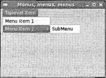Рис. 16.12 Структура GnomeUIInfoедва ли дружественная по отношению к программисту, если учесть, что она состоит из 11 элементов, большинство из которых обычно равно NULLили нулю. При их вводе очень легко допустить ошибку и трудно отличить одно поле от другого в длинном массиве элементов. Для улучшения сложившейся ситуации в среде GNOME определены макросы, устраняющие необходимость определения структур вручную. Эти макросы также вставляют пиктограммы и клавиатурные акселераторы для вас, и все даром. На самом деле редко возникают причины, заставляющие использовать вместо них что-то другое. Существуют два набора макросов, первый из которых определяет отдельные пункты меню. Эти макросы принимают два параметра: указатель на функцию обратного вызова и данные пользователя. #include <libgnomeui/libgnameui.h> #define GNOMEUIINFO_MENU_OPEN_ITEM(cb, data) #define GNOMEUIINFO_MENU_SAVE_ITEM(cb, data) #define GNOMEUIINFO_MENU_SAVE_AS_IТЕМ(cb, data) #define GNOMEUIINFO_MENU_PRINT_ITEM(cb, data) #define GNOMEUIINFO_MENU_PRINT_SETUP_ITEM(cb, data) #define GNOMEUIINFO_MENU_CLOSE_IТЕМ(cb, data) #define GNOMEUIINFO_MENU_EXIT_IТЕМ(cb, data) #define GNOMEUIINFO_MENU_QUIT_IТЕМ(cb, data) #define GNOMEUIINFO_MENU_CUT_ITEM(cb, data) #define GNOMEUIINFO_MENU_COPY_ITEM(cb, data) #define GNOMEUIINFO_MENU_PASTE_ITEM(cb, data) #define GNOMEUIINFO_MENU_SELECT_ALL_ITEM(cb, data) ... Второй набор предназначен для определений верхнего уровня, в него вы просто передаете массив. #define GNOMEUIINFO_MENU_FILE_TREE (tree) #define GNOMEUIINFO_MENU_EDIT_TREE (tree) #define GNOMEUIINFO_MENU_VIEW_TREE (tree) #define GNOMEUIINFO_MENU_SETTINGS_TREE (tree) #define GNOMEUIINFO_MENU_FILES_TREE (tree) #define GNOMEUIINFO_MENU_WINDOWS_TREE (tree) #define GNOMEUIINFO_MENU_HELP_TREE (tree) #define GNOMEUIINFO_MENU_GAME_TREE (tree) Выполните упражнение 16.10. Упражнение 16.10. Меню с помощью макросов GNOMEВ этом примере вы воспользуетесь уже заданными меню и посмотрите, как работают макросы. Внесите следующие изменения в программу menu1.с и назовите новый вариант menu2.c. Для простоты в этом примере для пунктов меню не определены функции обратного вызова. В данном случае наша задача — просто продемонстрировать удобство применения макросов GNOME, формирующих меню. #include <gnome.h> static GnomeUIInfo filemenu[] = { GNOMEUIINFO_MENU_NEW_ITEM("New", "Menu Hint", NULL, NULL), GNOMEUIINFO_MENU_OPEN_ITEM(NULL, NULL), GNOMEUIINFO_MENU_SAVE_AS_ITEM(NULL, NULL), GNOMEUIINFO_SEPARATOR, GNOMEIINFO_MENU_EXIT_ITEM(NULL, NULL), GNOMEUUINFO_END }; static GnomeUUInfo editmenu[] = GNOMEUIINFO_MENU_FIND_ITEM(NULL, NULL), GNOMEUIINFO_END }; static GnomeUIInfo menubar[] = { GNOMEUIINFO_MENU_FILE_TREE(filemenu), GNOMEUIINFO_MENU_EDIT_TREE(editmenu), GNOMEUIINFO_END }; int main(int argc, char *argv[]) { GtkWidget *app, *toolbar; gnome_program_init("gnome1", "0.1", LIBGNOMEUI_MODULE, argc, argv, GNOME_PARAM_NONE); app = gnome_app_new("gnome1", "Menus, menus, menus"); gtk_window_set_default_size(GTK_WINDOW(app), 300, 200); gnome_app_create_menus(GNOME_APP(app), menubar); gtk_widget_show(app); gtk_main(); return 0; } Применив макросы libgnomeui в menu2.c, вы значительно сократили код, который нужно набирать, и сделали его гораздо понятнее. Макросы экономят ваше время и усилия, предпринимаемые для создания меню и согласования текста меню, клавиатурных акселераторов и пиктограмм с другими приложениями GNOME. Старайтесь применять их в ваших приложениях при любой возможности. На рис. 16.13 показана программа menu3.c в действии на сей раз со стандартизованными в среде GNOME пунктами меню. 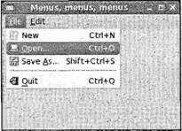Рис. 16.13 Диалоговые окнаОсновная часть любого приложения GUI — взаимодействие с пользователем и информирование его о важных событиях. Обычно для этого вы создаете временное окно с кнопками OK и Cancel и, если информация настолько важна, что требует немедленного отклика, например удаление файла, вам приходится блокировать доступ ко всем остальным окнам до тех пор, пока пользователь не сделает выбор (такие окна называют модальными диалоговыми окнами). Мы только что описали диалоговое окно, и в комплекте GTK+ есть специальные виджеты диалоговых окон, являющиеся потомками виджета GtkWindow, что существенно облегчает вашу программистскую работу. GtkDialogКак вы можете видеть, объект GtkDialog— потомок объекта GtkWindowи наследует все его функции и свойства. GtkWindow +----GtkDialog GtkDialogделит окно на две области, одна для содержимого виджета и другая для кнопок, которые располагаются вдоль нижнего края окна. Вы можете задать нужные вам кнопки и другие параметры диалогового окна во время его создания. GtkWidget* gtk_dialog_new_with_buttons(const gchar *title, GtkWindow *parent, GtkDialogFlags flags, const gchar *first button text, ...); Эта функция создает диалоговое окно с заголовком и кнопками. Второй параметр, parent, должен указывать на главное окно вашего приложения, чтобы комплект GTK+ мог убедиться в том, что диалоговое окно остается присоединенным к главному окну и минимизируется при сворачивании главного окна. Параметр flagsопределяет комбинацию свойств диалогового окна: □ GTK_DIALOG_MODAL; □ GTK_DIALOG_DESTROY_WITH_PARENT; □ GTK_DIALOG_NO_SEPARATOR. Вы можете комбинировать флаги с помощью поразрядной операции OR; например, комбинация GTK_DIALOG_MODAL | GTK_DIALOG_NO_SEPARATORозначает одновременно и модальное окно, и окно без разделительной линии между основной областью окна и областью кнопок. Оставшиеся параметры — это NULL-терминированный список кнопок и код соответствующего отклика. Вы поймете, что именно означает этот код отклика, когда познакомитесь с функцией gtk_dialog_run. Обычно кнопки выбираются из длинного списка готовых кнопок, которые определяет GTK+, поскольку вы получите уже готовые пиктограммы в кнопках. Далее показано, как бы вы создавали диалоговое окно с кнопками OK и Cancel, которое возвращает GTK_RESPONSE_ACCEPTи GTK_RESPONSE_REJECTпри нажатии этих кнопок: GtkWidget *dialog = gtk_dialog_new_with_buttons("Important question", parent_window, GTK_DIALOG_DESTROY_WITH_PARENT, GTK_STOCK_OK, GTK_RESPONSE_ACCEPT, GTK_STOCK_CANCEL, GTK_RESPONSE_REJECT, NULL); Мы остановились на двух кнопках, но на самом деле на количество кнопок в диалоговом окне нет ограничений. Более того, вы можете выбирать из ряда флагов типа отклика. Флаги accept(принять) и reject(отвергнуть) не применяются в стандарте GNOME и могут использоваться в ваших приложениях по вашему усмотрению. (Помните о том, что acceptв вашем приложении должен означать "принять".) Другие варианты, включая отклик OK и CANCEL, приведены в типе GtkResponseType enumв следующем разделе. Естественно, вы должны вставить содержимое в ваше диалоговое окно и для этого объект GtkDialogсодержит готовый упаковочный контейнер GtkVBoxдля заполнения виджетами. Вы получаете указатель прямо из объекта: GtkWidget *vbox = GTK_DIALOG(dialog)->vbox; Этот GtkVBoxприменяется обычным способом с помощью функции gtk_box_pack_startили чего-то подобного. После того как диалоговое окно создано, следующий шаг — представить его пользователю и ждать от него ответа. Сделать это можно двумя способами: в модальном режиме, который блокирует весь ввод за исключением диалогового окна, или в немодальном режиме, который воспринимает диалоговое окно как любое другое окно. Давайте сначала рассмотрим запуск модального диалогового окна. Модальное диалоговое окноМодальное диалоговое окно заставляет пользователя ответить до того, как сможет выполниться любое другое действие. Оно полезно в тех ситуациях, когда пользователь собирается сделать что-то, сопряженное с серьезными последствиями, или нужно вывести сообщения об ошибках и предупреждениях. Диалоговое окно можно сделать модальным, установив флаг GTK_DIALOG_MODALи вызвав функцию gtk_widget_show, но есть лучший путь. Функция gtk_dialog_runвыполнит за вас всю тяжелую работу, остановив дальнейшее выполнение программы до тех пор, пока не будет нажата кнопка в диалоговом окне. Когда пользователь нажимает кнопку (или диалоговое окно уничтожается), функция gtk_dialog_runвозвращает результат типа int, указывающий на кнопку, нажатую пользователем. В GTK+ очень кстати определен тип enumдля описания возможных значений. typedef enum { GTK_RESPONSE_NONE = -1, GTK_RESPONSE_REJECT = -2, GTK_RESPONSE_ACCEPT = -3, GTK_RESPONSE_DELETE_EVENT = -4 GTK_RESPONSE_OK = -5, GTK_RESPONSE_CANCEL = -6, GTK_RESPONSE_CLOSE = -7, GTK_RESPONSE_YES = -8, GTK_RESPONSE_NO = -9, GTK_RESPONSE_APPLY = -10, GTK_RESPONSE_HELP = -11 } GtkResponseType; Теперь мы можем объяснить код отклика, передаваемый в функцию gtk_dialog_new_with_buttons, — это код возврата типа GtkResponseType, который функция gtk_dialog_runвозвращает, когда нажата кнопка. Если диалоговое окно уничтожается (это происходит, например, когда пользователь щелкает кнопкой мыши пиктограмму закрытия), вы получаете результат GTK_RESPONSE_NONE. Для вызова соответствующих операторов идеально подходит конструкция switch: GtkWidget* dialog = create_dialog(); int result = gtk_dialog_run(GTK_DIALOG(dialog)); switch(result) { case GTK_RESPONSE_ACCEPT: delete_file(); break; сазе GTK_RESPONSE_REJECT: do_nothing(); break; default: dialog_was_cancelled(); break; } gtk_widget_destroy(dialog); Это все, что есть для простых модальных окон в комплекте инструментов GTK+. Как видите, включен очень небольшой программный код и потрачено немного усилий. В конце нужно только провести чистку с помощью функции gtk_widget_destroy. Если вам понадобится немодальное диалоговое окно, все будет не так просто. Вы не сможете использовать функцию gtk_dialog_run, вместо нее придется связать функции обратного вызова с кнопками диалогового окна. Немодальные диалоговые окнаМы рассмотрели, как применять функцию gtk_dialog_runдля создания модального (блокирующего) диалогового окна. Немодальное окно действует несколько иначе, хотя и создается тем же способом. Вместо вызова функции gtk_dialog_runвы связываете функцию обратного вызова с сигналом отклика объекта GtkDialog, который генерируется при щелчке кнопки мышью или уничтожении окна. Связывание сигнала обратного вызова выполняется обычным образом с той лишь разницей, что у функции обратного вызова появляется дополнительный аргумент отклика, играющий ту же роль, что код возврата функции gtk_dialog_run. В приведенном далее фрагменте программного кода показаны основные принципы использования немодального диалогового окна: void dialog_button_clicked(GtkWidget *dialog, gint response, gpointer user_data) { switch (response) { case GTK_RESPONSE_ACCEPT: do_stuff(); break; case GTK_RESPONSE_REJECT: do_nothing(); break; default: dialog_was_cancelled(); break; } gtk_widget_destroy(dialog); } int main() { ... GtkWidget *dialog = create_dialog(); g_signal_connect(GTK_OBJECT(dialog), "response", GTK_SIGNAL_FUNC(dialog_button_clicked), user_data); gtk_widget_show(dialog); ... } С немодальными диалоговыми окнами могут возникать сложности, т.к. от пользователя не требуется немедленного ответа, и он может свернуть диалоговое окно и забыть о нем. Вы должны предусмотреть действия при попытке пользователя повторно открыть диалоговое окно до закрытия первого экземпляра окна. Следует проверить, равен ли NULLуказатель диалогового окна и если нет, повторно вывести уже открытое диалоговое окно на экран, вызвав функцию gtk_window_present. Вы увидите этот прием в действии в разд. "Приложение для работы с базой данных компакт-дисков" в конце данной главы. GtkMessageDialogДля очень простых диалоговых окон даже тип GtkDialogизлишне сложен. GtkDialog +----GtkMessageDialog С помощью типа GtkMessageDialogвы можете создать информационное диалоговое окно одной строкой программного кода. GtkWidget* gtk_message_dialog_new(GtkWindow *parent, GtkDialogFlags flags, GtkMessageType type, GtkButtonsType buttons, const gchar *message_format, ...); Эта функция создает диалоговое окно, снабженное пиктограммами, заголовком и настраиваемыми кнопками. Параметрtype задает готовую пиктограмму и заголовок диалогового окна в соответствии с его предполагаемым назначением; например, окно с предупреждением содержит пиктограмму предупреждения в виде треугольника. Существует четыре возможных варианта для простых диалоговых окон, с которыми вы будете сталкиваться чаще всего: □ GTK_MESSAGE_INFO; □ GTK_MESSAGE_WARNING; □ GTK_MESSAGE_QUESTION; □ GTK_MESSAGE_ERROR. Вы также можете выбрать значение GTK_MESSAGE_OTHER, применяемое в тех случаях, когда не используются перечисленные типы. Для окна типа GtkMessageDialogможно передать тип GtkButtonsType(табл. 16.4) вместо перечисления всех кнопок по очереди. Таблица 16.4
Теперь остается только текст диалогового окна, который можно создать из строки подстановки, формируемой так же, как в функции printf. В данном примере вы спрашиваете пользователя, настаивает ли он на своем требовании удалить файл: GtkWidget *dialog = gtk_message_dialog_new(main_window, GTK_DIALOG_DESTROY_WITH_PARENT, GTK_MESSAGE_QUESTION, GTK_BUTTONS_YES_NO, "Are you sure you wish to delete %s?", filename); result = gtk_dialog_run(GTK_DIALOG(dialog)); gtk_widget_destroy(dialog); Это диалоговое окно будет отображаться так, как показано на рис. 16.14. 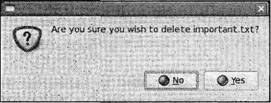Рис. 16.14 Окно типа GtkMessageDialog— простейший способ обмена информацией или получения ответов на вопросы типа "да/нет". Вы воспользуетесь им в следующем разделе, когда примените полученные знания для создания GUI вашего приложения для работы с базой данных компакт-дисков. Приложение для работы с базой данных компакт-дисковВ предыдущих главах вы разрабатывали базу данных компакт-дисков с помощью MySQL и интерфейса на языке С. Теперь вы увидите, как просто вставить внешний GUI средствами GNOME/GTK+ и создать пользовательский интерфейс с богатыми функциональными возможностями. Примечание Из соображений простоты и ясности мы создадим базовый скелетный интерфейс, в котором реализовано лишь подмножество функций — к примеру, вы не сможете добавлять информацию о дорожках в компакт-диски или удалять CD. Но вы увидите в вашем приложении в действии виджеты, обсуждавшиеся в этой главе, и поймете, как они применяются в реальных программах. Будет написан программный код для следующих ключевых действий: □ регистрация в базе данных из GUI; □ поиск компакт-диска; □ отображение сведений о компакт-диске и его дорожках; □ вставка компакт-диска в базу данных; □ создание окна About (О программе); □ формирование подтверждения при завершении работы пользователя. Разделим код на три файла, совместно использующие заголовочный файл cdapp_gnome.h. В исходных файлах функции создания окон и диалоговых окон — функции формирования интерфейса — отделены от функций обратного вызова (упражнения 16.11-16.14). Упражнение 16.11. Файл cdapp_gnome.hСначала рассмотрим файл cdapp_gnome.h и функции, которые вы должны реализовать. 1. Включите в исходный текст программы заголовочные файлы среды GNOME и заголовочный файл для функций интерфейса, разработанного вами в главе 8. В данном примере программы используются файлы app_mysql.h и app_mysql.c из главы 8 и созданная там же база данных. #include <gnome.h> #include "app_mysql.h" 2. В типе enumобозначены столбцы виджета GtkTreeView, который вы будете применять для отображения сведений о компакт-дисках и их дорожках. enum { COLUMN_TITLE, COLUMN_ARTIST, COLUMN_CATALOGUE, N_COLUMNS }; 3. У вас есть три функции создания окна в файле interface.c. GtkWidget *create_main_window(); GtkWidget *create_login_dialog(); GtkWidget *create_addcd_dialog(); 4. Функции обратного вызова для пунктов меню, панели инструментов, кнопок диалогового окна и кнопки поиска находятся в файле callbacks.с. /* Обратный вызов для выхода из приложения */ void quit_app(GtkWidget* window, gpointer data); /* Обратный вызов для подтверждения завершения перед выходом */ gboolean delete_event_handler(GtkWidget* window, GdkEvent *event, gpointer data); /* Обратный вызов, связанный с сигналом отклика диалогового окна addcd */ void addcd_dialog_button_clicked(GtkDialog * dialog, gint response, gpointer userdata); /* Обратный вызов для кнопки Add CD меню и панели инструментов */ void on_addcd_activate(GtkWidget *widget, gpointer user_data); /* Обратный вызов для кнопки меню About */ void on_about_activate(GtkWidget* widget, gpointer user_data); /* Обратный вызов для кнопки поиска */ void on_search_button_clicked(GtkWidget *widget, gpointer userdata);Упражнение 16.12. Файл interface.c Первым рассмотрим файл interface.c, в котором определяются окна и диалоговые окна, применяемые в приложении. 1. Сначала несколько указателей виджетов, на которые вы ссылаетесь в файлах callbacks.c и main.c: #include "app_gnome.h" GtkWidget* treeview; GtkWidget* appbar; GtkWidget* artist_entry; GtkWidget *title_entry; GtkWidget *catalogue_entry; GtkWidget *username_entry; GtkWidget *password_entry; 2. app— глобальная переменная, указатель на главное окно: static GtkWidget *арр; 3. Определите вспомогательную функцию, которая вставляет в контейнер виджет-метку с заданным текстом: void add_widget_with_label(GtkContainer *box, gchar *caption, GtkWidget *widget) { GtkWidget *label = gtk_label_new(caption); GtkWidget *hbox = gtk_hbox_new(TRUE, 4); gtk_container_add(GTK_CONTAINER(hbox), label); gtk_container_add(GTK_CONTAINER(hbox), widget); gtk_container_add(box, hbox); } 4. Определения строки меню, использующие для удобства макросы GNOMEUIINFO: static GnomeUIInfo filemenu[] = { GNOMEUIINFO_MENU_NEW_ITEM("_New CD", NULL, on_addcd_activate, NULL), GNOMEUIINFO_SEPARATOR, GNOMEUIINFO_MENU_EXIT_ITEM(close_app, NULL), GNOMEUIINFO_END }; static GnomeUIInfo helpmenu[] = { GNOMEUIINFO_MENU_ABOUT_ITEM(on_about_activate, NULL), GNOMEUIINFO_END }; static GnomeUIInfo menubar[] = { GNOMEUIINFO_MENU_FILE_TREE(filemenu), GNOMEUIINFO_MENU_HELP_TREE(helpmenu), GNOMEUIINFO_END }; 5. Теперь вы создаете главное окно, вставляете меню и панель инструментов, задаете их размер, центрируете относительно экрана и собираете виджеты, формирующие интерфейс. Учтите, что эта функция не отображает окно на экране, а просто возвращает указатель на окно: GtkWidget *create_main_window() { GtkWidget* toolbar; GtkWidget* vbox; GtkWidget* hbox; GtkWidget* label; GtkWidget* entry; GtkWidget *search_button; GtkWidget* scrolledwindow; GtkCellRenderer *renderer; app = gnome_app_new("GnomeCD", "CD Database"); gtk_window_set_position(GTK_WINDOW(app), GTK_WIN_POS_CENTER); gtk_window_set_defeult_size(GTK_WINDOW(app ), 540, 480); gnome_app_create_menus(GNOME_APP(app), menubar); 6. Создайте панель инструментов с помощью стандартных пиктограмм GTK+ и свяжите с ней функции обратного вызова: toolbar = gtk_toolbar_new(); gnome_app_add_toolbar(GNOME_APP(app), GTK_TOOLBAR(toolbar), "toolbar", BONOBO_DOCK_ITEM_BEH_EXCLUSIVE, BONOBO_DOCK_TOP, 1, 0, 0); gtk_container_set_border_width(GTK_CONTAINER(toolbar), 1); gtk_toolbar_insert_stock(GTK_TOOLBAR(toolbar), "gtk-add", "Add new CD", NULL, GTK_SIGNAL_FUNC(on_addcd_activate), NULL, -1); gtk_toolbar_insert_space(GTK_TOOLBAR(toolbar), 1); gtk_toolbar_insert_stock(GTK_TOOLBAR(toolbar), "gtk-quit", "Quit the Application", NULL, GTK_SIGNAL_FUNC(on_quit_activate), NULL, -1); 7. Затем вы создаете виджеты, используемые для поиска компакт-диска: label = gtk_label_new("Search String:"); entry = gtk_entry_new(); search_button = gtk_button_new_with_label("Search"); 8. Окно gtk_scrolled_windowпредоставляет полосы прокрутки, позволяя виджету (в данном случае GtkTreeView) превышать размеры окна: scrolledwindow = gtk_scrolled_window_new(NULL, NULL); gtk_scrolled_window_set_policy(GTK_SCROLLED_WINDOW(scrolledwindow), GTK_POLICY_AUTOMATIC, GTK_POLICY_AUTOMATIC); 9. Далее скомпонуйте интерфейс, применяя стандартным способом виджеты-контейнеры: vbox = gtk_vbox_new(FALSE, 0); hbox = gtk_hbox_new(FALSE, 0); gtk_box_pack_start(GTK_BOX(vbox), hbox, FALSE, FALSE, 5); gtk_box_pack_start(GTK_BOX(hbox), label, FALSE, FALSE, 5); gtk_box_pack_start(GTK_BOX(hbox), entry, TRUE, TRUE, 6); gtk_box_pack_start(GTK_BOX(hbox), search_button, FALSE, FALSE, 5); gtk_box_pack_start(GTK_BOX(vbox), scrolledwindow, TRUE, TRUE, 0); 10. Затем создайте виджет GtkTreeView, вставьте три столбца и поместите его в окно GtkScrolledWindow: treeview = gtk_tree_view_new(); renderer = gtk_cell_renderer_text_new(); gtk_tree_view_insert_column_with_attributes(GTK_TREE_VIEW(treeview), COLUMN_TITLE, "Title", renderer, "text", COLUMN_TITLE, NULL); gtk_tree_view_insert_column_with_attributes(GTK_TREE_VIEW(treeview), COLUMN_ARTIST, "Artist", renderer, "text", CQLUMN_ARTIST, NULL); gtk_tree_view_insert_column_with_attrihutes(GTK_TREE_VIEW(treeview), COLUMN_CATALOGUE, "Catalogue", renderer, "text", COLUMN_CATALOGUE, NULL); gtk_tree_view_set_search_column(GTK_TREE_VIEW(treeview), COLUMN_TITLE); gtk_container_add(GTK_CONTAINER(scrolledwindow), treeview); 11. В заключение задайте содержимое главного окна, вставьте строку состояния GnomeAppи подсоедините нужные обратные вызовы: gnome_app_set_contents(GNOMEAPP(app), vbox); appbar = gnome_appbar_new(FALSE, TRUE, GNOME_PREFERENCES_NEVER); gnome_app_set_statusbar(GNOME_APP(app), appbar); gnome_app_install_menu_hints(GNOME_APP(app), menubar); g_signal_connect(GTK_OBJECT(search_button), "clicked", GTK_SIGNAL_FUNC(on_search_button_clicked), entry); g_signal_connect(GTK_OBJECT(app), "delete_event", GTK_SIGNAL_FUNC(delete_event_handler), NULL); g_signal_connect(GTK_OBJECT(app), "destroy", GTK_SIGNAL_FUNC(quit_app), NULL); return app; } 12. Следующая функция создает простое диалоговое окно, позволяющее добавлять новый компакт-диск в базу данных. Оно состоит из полей ввода для исполнителя, названия и полей каталога, а также кнопок OK и Cancel: GtkWidget *create_addcd_dialog() { artist_entry = gtk_entry_new(); title_entry = gtk_entry_new(); catalogue_entry = gtk_entry_new(); GtkWidget* dialog = gtk_dialog_new_with_buttons("Add CD", app, GTK_DIALOG_DESTROY_WITH_PARENT, GTK_STOCK_OK, GTK_RESPONSE_ACCEPT, GTK_STOCK_CANCEL, GTK_RESPONSE_REJECT, NULL); add_widget_with_label(GTK_CONTAINER(GTK_DIALOG(dialog)->vbox), "Artist", artist_entry); add_widget_with_label(GTK_CONTAINER(GTK_DIALOG(dialog)->vbox), "Title", title_entry); add_widget_with_label(GTK_CONTAINER(GTK_DIALOG(dialog)->vbox), "Catalogue", catalogue_entry); g_signal_connect(GTK_OBJECT(dialog), "response", GTK_SIGNAL_FUNC(addcd_dialog_button_clicked), NULL); return dialog; } 13. База данных требует регистрации пользователя перед выполнением запросов к ней, поэтому данная функция создает диалоговое окно для ввода имени пользователя и пароля: GtkWidget *create_login_dialog() { GtkWidget* dialog = gtk_dialog_new_with_buttons("Database Login", app, GTK_DIALOG_MODAL, GTK_STOCK_OK, GTK_RESPONSE_ACCEPT, GTK_STOCK_CANCEL, GTK_RESPONSE_REJECT, NULL); username_entry = gtk_entry_new(); password_entry = gtk_entry_new(); gtk_entry_set_visibility(GTK_ENTRY(password_entry), FALSE); add_widget_with_label(GTK_CONTAINER(GTK_DIALOG(dialog)->vbox), "Username", username_entry); add_widget_with_label(GTK_CONTAINER(GTK_DIALOG(dialog)->vbox), "Password", password_entry); gtk_widget_show_all(GTK_WIDGET(GTK_DIALOG(dialog)->vbox)); return dialog; }Упражнение 16.13. callbacks.c Файл callbacks.с содержит функции, задающие обратные вызовы для виджетов пользовательского интерфейса. 1. Сначала необходимо включить заголовочный файл и ссылки на некоторые определенные в файле interface.c глобальные переменные для чтения и изменения конкретных свойств виджетов: #include "app_gnome.h" extern GtkWidget *treeview; extern GtkWidget *app; extern GtkWidget *appbar; extern GtkWidget *artist_entry; extern GtkWidget *title_entry; extern GtkWidget *catalogue_entry; static GtkWidget *addcd_dialog; 2. В функции quit_appвы вызываете функцию database_endдля чистки и закрытия базы данных перед выходом: void quit_app(GtkWidget* window, gpointer data) { database_end(); gtk_main_quit(); } 3. Следующая функция выводит простое диалоговое окно для подтверждения вашего желания завершить приложение, возвращая отклик в виде значения gboolean: gboolean confirm_exit() { gint result; GtkWidget* dialog = gtk_message_dialog_new(NULL, GTK_DIALOG_MODAL, GTK_MESSAGE_QUESTION, GTK_BUTTONS_YES_NO, "Are you sure you want to quit?"); result = gtk_dialog_run(GTK_DIALOG(dialog)); gtk_widget_destroy(dialog); return (result == GTK_RESPONSE_YES); } 4. delete_event_handler— функция обратного вызова, которую вы связываете с событием главного окна Gdk delete event. Событие генерируется, когда вы пытаетесь закрыть окно до того (что существенно), как послан сигнал GTK+ уничтожения окна: gboolean delete_event_handler(GtkWidget* window, GdkEvent *event, gpointer data) { return !confirm_exit(); } 5. Следующая функция вызывается, когда мышью щелкается кнопка в диалоговом окне вставки компакт-диска. Если вы щелкнули мышью кнопку OK, программа копирует строки в массив типа char и передает его данные в интерфейсную функцию MySQL add_cd: void addcd_dialog_button_clicked(GtkDialog * dialog, gint response, gpointer userdata) { const gchar *artist_const; const gchar* title_const; const gchar *catalogue_const; gchar artist[200]; gchar title[200]; gchar catalogue[200]; gint *cd_id; if (response == GTK_RESPONSE_ACCEPT) { artist_const = gtk_entry_get_text(GTK_ENTRY(artist_entry)); title_const = gtk_entry_get_text(GTK_ENTRY(title_entry)); catalogue_const = gtk_entry_get_text(GTK_ENTRY(catalogue_entry)); strcpy(artist, artist_const); strcpy(title, title_const); strcpy(catalogue, catalogue_const); add_cd(artist, title, catalogue, cd_id); } addcd_dialog = NULL; gtk_widget_destroy(GTK_WIDGET(dialog)); } 6. Далее идет самая важная часть приложения: извлечение результатов поиска и заполнение объекта GtkTreeView: void on_search_button_clicked(GtkButton* button, gpointer userdata) { struct cd_search_st cd_res; struct current_cd_st cd; struct current_tracks_st ct; gint res1, res2, res3; gchar track_title[110]; const gchar *search_string_const; gchar search string[200]; gchar search_text[200]; gint i = 0, j = 0; GtkTreeStore *tree_store; GtkTreeIter parent_iter, child_iter; memset(&track_title, 0, sizeof(track_title)); 7. Здесь вы получаете строку поиска из виджета ввода, копируете ее в переменную и выбираете соответствующие ID компакт-дисков: search_string_const = gtk_entry_get_text(GTK_ENTRY(userdata)); strcpy(search_string, search_string_const); resl = find_cds(search_string, &cd_res); 8. Затем вы обновляете appbarдля вывода сообщения, информирующего пользователя о результатах поиска: sprintf(search_text, "Displaying %d result(s) for search string ' %s'", MIN(res1, MAX_CD_RESULT), search_string); gnome_appbar_push(GNOME_APPBAR(appbar), search_text); 9. Теперь у вас есть результаты поиска, и можно заполнять ими модель GtkTreeStore. Для каждого ID компакт-диска необходимо извлечь соответствующую структуру типа current_cd_st, которая содержит название и исполнителя CD, и затем извлечь список дорожек диска. В заголовочном файле app_mysql.h задано ограничение количества элементов, MAX_CD_RESULT, для того, чтобы не было переполнения модели GtkTreeStore: tree_store = gtk_tree_store_new(N_COLUMNS, G_TYPE_STRING, G_TYPE_STRING, G_TYPE_STRING); while (i < res1 && i < MAX_CD_RESULT) { res2 = get_cd(cd_res.cd_id[i], &cd); /* В модель вставляется новая строка */ gtk_tree_store_append(tree_store, &parent_iter, NULL); gtk_tree_store_set(tree_store, &parent_iter, COLUMN_TITLE, cd.title, COLUMN_ARTIST, cd.artist_name, COLUMN_CATALOGUE, cd.catalogue, -1); res3 = get_cd_tracks(cd_res.cd_id[i++], &ct); j = 0; /* Заполнение дерева дорожками текущего компакт-диска */ while (j < res3) { sprintf(track_title, " Track %d. ", j+1); strcat(track_title, ct.track[j++]); gtk_tree_store_append(tree_store, &child_iter, &parent_iter); gtk_tree_store_set(tree_store, &child_iter, COLUMN_TITLE, track_title, -1); } } gtk_tree_view_set_model(GTK_TREE_VIEW(treeview), GTK_TREE_MODEL(tree_store)); } 10. Диалоговое окно addcdнемодальное. Следовательно, перед его созданием и отображением вы проверяете, не активно ли оно уже: void on_addcd_activate(GtkMenuItem* menuitem, gpointer user_data) { if (addcd_dialog != NULL) return; addcd_dialog = create_addcd_dialog(); gtk_widget_show_all(addcd_dialog); } gboolean close_app(GtkWidget * window, gpointer data) { gboolean exit; if ((exit = confirm_exit())) { quit_app(NULL, NULL); } return exit; } 11. Когда вы щелкаете мышью кнопку About (О программе), раскрывается стандартное поле aboutсреды GNOME: void on_about_activate(GtkMenuItem* menuitem, gpointer user_data) { const char* authors[] = {"Wrox Press", NULL}; GtkWidget* about = gnome_about_new("CD Database", "1.0", " (c) Wrox Press", "Beginning Linux Programming", (const char **)authors, NULL, "Translators", NULL); gtk_widget_show(about); }Упражнение 16.14. Файл main.c Введите следующий программный код в файл main.с, содержащий функцию mainпрограммы. 1. После операторов includeвы ссылаетесь на поля ввода имени пользователя и пароля из файла interface.c: #include <stdio.h> #include <stdlib.h> #include "app_gnome.h" extern GtkWidget* username_entry; extern GtkWidget* password_entry; gint main(gint argc, gchar *argv[]) { GtkWidget *main_window; GtkWidget *login_dialog; const char *user_const; const char *pass_const; gchar username[100]; gchar password[100]; gint result; 2. Инициализируйте как обычно библиотеки GNOME и затем создайте и отобразите на экране главное окно и диалоговое окно вашей регистрации: gnome_program_init("CdDatabase", "0.1", LIBGNOMEUI_MODULE, argc, argv, GNOME_PARAM_APP_DATADIR, "", NULL); main_window = create_main_window(); gtk_widget_show_all(main_window); login_dialog = create_login_dialog(); 3. Вы ждете в цикле, пока пользователь не введет корректную комбинацию имени пользователя и пароля. Он может выйти из приложения, щелкнув мышью кнопку Cancel, причем в этом случае ему придется подтвердить свое действие: while (1) { result = gtk_dialog_run(GTK_DIALOG(login_dialog)); if (result != GTK_RESPONSE_ACCEPT) { if (confirm_exit()) return 0; else continue; } user_const = gtk_entry_get_text(GTK_ENTRY(username_entry)); pass_const = gtk_entry_get_text(GTK_ENTRY(password_entry)); strcpy(username, user_const); strcpy(password, pass_const); if (database_start(username, password) == TRUE) break; 4. Если функция database_startзавершается аварийно, вы выводите сообщение и диалоговое окно регистрации снова отображается на экране: GtkWidget* error_dialog = gtk_message_dialog_new(GTK_WINDOW(main_window), GTK_DIALOG_DESTROY_WITH_PARENT, GTK_MESSAGE_ERROR, GTK_BUTTONS_CLOSE, "Could not log on! — Check Username and Password"); gtk_dialog_run(GTK_DIALOG(error_dialog)); gtk_widget_destroy(error_dialog); } gtk_widget_destroy(login_dialog); gtk_main(); return 0; } 5. Для компиляции этого приложения напишите make-файл. Как и в главе 8, вам, возможно, придется указать место расположения библиотеки mysql-клиента с помощью строки, подобной приведенной далее: -L/usr/lib/mysql После опции -Lпоместите каталог, в котором ваша система хранит библиотеки MySQL: all: app app: app_mysql.c callbacks.с interface.c main.с app_gnome.h app_mysql.h gcc -o app -I/usr/include/mysql app_mysql.с callbacks.с interface.c main.с -lmysqlclient `pkg-config --cflags --libs libgnome-2.0 libgnomeui-2.0` clean: rm -f app 6. Теперь для компиляции приложения для работы с компакт-дисками просто воспользуйтесь командой make: make -f Makefile Когда вы запустите приложение арр, то получите ваше приложение для работы с базой данных компакт-дисков в стиле GNOME (рис. 16.15)! 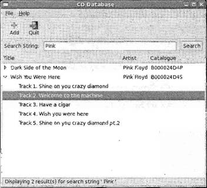Рис. 16.15 РезюмеВ этой главе вы узнали о программировании с помощью библиотек GTK+/GNOME для создания приложений с профессионально выглядящем интерфейсом GUI. Сначала вы рассмотрели с X Window System и научились применять комплекты инструментальных средств, а затем вкратце познакомились с принципами работы GTK+ под управлением системы объектов и механизма сигналов/обратных вызовов этого комплекта инструментов. Далее вы перешли к API виджетов GTK+, продемонстрировав их применение на простых и более сложных примерах, приведенных в нескольких листингах программ. Рассмотрев виджет GnomeApp, вы научились легко создавать меню с помощью вспомогательных макросов. В заключение вы узнали, как создавать модальные и немодальные диалоговые окна для взаимодействия с пользователем. И в конце главы вы создали средствами GNOME/GTK+ интерфейс пользователя для вашей базы данных компакт-дисков, который позволяет регистрироваться в базе данных, искать компакт-диски и пополнять базу данных новыми CD. В главе 17 вы познакомитесь с комплектом инструментальных средств, конкурирующим с GTK+, и научитесь программировать в среде KDE, применяя комплект Qt. |
|
||||||||||||||||||||||||||||||||||||||||||||||||||||||||||||||
|
Главная | В избранное | Наш E-MAIL | Прислать материал | Нашёл ошибку | Наверх |
||||||||||||||||||||||||||||||||||||||||||||||||||||||||||||||||
|
|
||||||||||||||||||||||||||||||||||||||||||||||||||||||||||||||||